INTRODUCTION
The 10th European Parliament elections (and the first since the UK’s departure) took place from the 6th to the 9th of June 2024, spanning the 27 EU member states. In this period over 182 million eligible voters chose the next set of 720 Members of the European Parliament (MEPs).
The outcome of the elections marked significant shifts in the European political landscape. Traditional, centrist political groups experienced losses whereas right-wing and far-right parties made notable gains in many countries. The overall results also reflected growing fragmentation and the strengthening of Eurosceptic voices in several member states.
The composition of the European Parliament is complex - it involves over 200 national political parties from 27 countries that organise into 8 European Parliament groups, 720 MEPs that fill the seats of the parliament, and positions from the whole political spectrum represented across diverse national backdrops. The results of the election mirror this complexity - a large amount of data is produced which is then analysed, reported, and published in many languages and formats. Clear and accurate communication of this data is vital as the outcome of the vote has important implications for EU policy-making on key issues such as migration, defense, climate change, and economic governance in the following parliamentary term.
Visualizing Democratic Choice
Since election results are inherently complex, data visualisation is commonly used to transform the data into accessible insights, allowing citizens to quickly undertand the political landscape and understand what the numbers mean for governance and policy.
When it comes to the European Parliament elections, using visualisation to present the results comes with unique challenges. The amount and complexity of the data means that careful choices have to be made about what to emphasise and how to maintain clarity.
Traditional approaches like semicircular parliament seat diagrams mirror the physical parliamentary chamber, making coalition dynamics and political balance immediately visible. Geographic breakdowns reveal how European political sentiment varies across regions, while comparative visualizations can highlight shifts from previous elections.
The goal of these visualizations is not simply to report numbers, but to illuminate patterns, facilitate comparison, and make democratic outcomes comprehensible. In an era of information overload, clear and honest visual representation of electoral data serves a vital civic function - helping people understand the institutions that govern them and the choices their fellow citizens have made.
THE ORIGINAL PLOT
The visualisation chosen as the basis of this project was sourced from the Wikipedia page “2024 European Parliament election” (https://en.wikipedia.org/wiki/2024_European_Parliament_election) and appears to have been originally made using the Inkscape platform.
This plot aims to communicate the results of the elections to a wide audience by providing a unified visual overview at both a national and EU level. It does this by including geographic, seat-based, and vote-proportion representations.
A choropleth map (a statistical map that uses colours/ shades to represent data values across predefined geographical areas) employing a combination of colour coding and color graduation is used to represent both which European Parliament group won the largest proportion of the vote in each EU27 country, and what percentage range of the total vote this winning proportion represents.
Parliament plots (also called hemicycle diagrams) are used to represent the seat distribution in legislative bodies. Traditionally, dots are arranged in a semicircle or horseshoe shape where each dot represents one seat/ representative and the colour of the dot represents the political party or group that the representative is affiliated with. In this case, the original plot uses 27 distinct, circular parliament plots to visualise the seat breakdown by European Parliament group in each of the EU member states.
Donut plots show the proportions of a whole, and are essentially nothing more than pie charts with the middle cut out. In the case of original plot, 27 individual donut plots are used to convey the percentage of the total vote that each European Parliament group recieved in each country.
The decision to explore this graph was largely due to the variety of visualisation techniques that is employs, which combine into an overall striking and very eye-catching plot. Further to the this visual interest created by the merging of techniques, I hoped that trying to recreate a plot that uses many different methods to convey election data would allow me to explore a wider range of data visualisation tools in R.
DATA SOURCES
Obtaining the election data needed for the recreation of this plot posed some challenges and the final data used came from two differet sources.
The data used to recreate the parliament seat plots came directly from 27 individual country-specific election result datasets published online by the European Parliament (https://results.elections.europa.eu/en/tools/download-datasheets/). These datasets primarily consisted of the number of seats won by each European Perliament group in their respective countries which is all the information that was required for this part of the plot.
The data that was used to recreate the donut plots, which represents the proportion of the total vote in each country won per European Parliament group, could not be found in a pre-existing dataset and nor were these figures published explicitly online. This lack of accessible and verifiable data meant that considerable effort was required to approximate and reconstruct the data needed to reconstruct this part of the plot accurately. To this end, the percentage of votes won by individual national political parties was sourced and then aggregated in to European Parliament group percentages manually by researching the affiliation of each individual party at the time of the election. This was a timely process that utilised many sources such as wikipedia, the European Parliament website, and the webpages of the individual national parties themselves.
Finally, the data required to achieve the colouring of the background map had to be recreated manually. This process was less involved than the data recreation of the donut plots as the figures required could be extracted directly from the original plot.
Once the required data was gathered, the processing and visualisation process in R could begin.
INSTALLING PACKAGES
This project uses numerous packages in R that are required to facilitate effective data manipulation and visulisation in a variety of forms.
DEFINING GLOBALS
At the beginning of the replication process, some global specifications were defined in order to streamline the visualisation process and ensure consistency across the multiple components of the plot.
The order in which the European Parliament groups were represented in the original parliament and donut plots was assigned to a vector:
party_order <- c("ESN", "Patriots", "ECR", "EPP", "NI", "Independent", "Renew", "GREENSEFA", "SD", "Theleft")Another vector was used to define a standard colour palette reflective of the colours used to represent each European Parliament group in the original plot. To do this, the original image was uploaded to the website https://imagecolorpicker.com/ which allowed the exact hex codes of each colour to be identified and used in this project:
custom_cols <- c(
"ECR" = "#3d29a3",
"EPP" = "#3aaff7",
"NI" = "#8c8673",
"Patriots" = "#3e435b",
"Renew" = "#ffd500",
"SD" = "#ed1c25",
"ESN" = "#997a1f",
"GREENSEFA" = "#33cd32",
"Theleft" = "#b01b66",
"Independent" = "#e0e0e0")MAKING THE BACKGROUND MAP
The first component of the original plot to be recreated was the main background map. A dataset for the data displayed in the map was constructed:
eu_parl_map <- data.frame(
country = c("Austria", "Belgium", "Bulgaria", "Croatia", "Cyprus", "Czechia", "Denmark", "Estonia", "Finland", "France", "Germany", "Greece", "Hungary", "Ireland", "Italy", "Latvia", "Lithuania", "Luxembourg", "Malta", "Netherlands", "Poland", "Portugal", "Romania", "Slovakia", "Slovenia", "Spain", "Sweden"),
country_code = c("AUT", "BEL", "BGR", "HRV", "CYP", "CZE", "DNK", "EST", "FIN", "FRA", "DEU", "GRC", "HUN", "IRL", "ITA", "LVA","LTU", "LUX", "MLT", "NLD", "POL", "PRT", "ROU", "SVK", "SVN", "ESP", "SWE"),
top_party = c("Patriots", "Renew", "EPP", "EPP", "EPP", "Patriots", "Renew", "Renew", "EPP", "Patriots", "EPP", "EPP", "Patriots", "Renew", "ECR", "ECR", "EPP", "EPP", "SD", "Renew", "EPP", "SD", "SD", "NI", "EPP", "EPP", "SD"),
top_seats = c(6, 5, 6, 6, 2, 9, 4, 2, 4, 30, 31, 7, 11, 6, 24, 3, 3, 2, 3, 7, 23, 8, 11, 7, 5, 22, 5),
total_seats = c(20, 22, 17, 12, 6, 21, 15, 7, 15, 81, 96, 21, 21, 14, 76, 9, 11, 6, 6, 31, 53, 21, 33, 15, 9, 61, 21)
)
# create a variable containing the percentage of seats held by top group
eu_parl_map <-
eu_parl_map |>
mutate(top_percentage = (top_seats / total_seats) * 100)Second, we get the map data that we need for the project. In R there are several packages that can be used for making map-based visualisations, these include “maps”, “rnaturalearth”, and “giscoR”. After researching map creation in R I chose to use the “rnaturalearth” package for this project as it seemed to be an up-to-date, general-purpose mapping package that had a lot of readily-available supporting documentation, online resources, and existing discussion on R programming forums.
Firstly all the geographic boundary data included in the “naturalearth” package was called. It was decided that for this project a “medium” scale with moderate detail would provide a good balance of reasonable detail without excessive file size or rendering time. Returning the data as a “sf” (simple features) object provides a tidyverse-friendly data structure and makes the data compatible with visualisation packages such as ggplot2 which will be relied on heavily throughout this project.
countries <- ne_countries(scale = "medium", returnclass = "sf")Next this full set of countries was reduced to what is needed for the project - the continental european territories of the 27 European union member states. This was done using a combination of centroids and latitudes/longitudes.
The complex, multi-part geometries retrieved from “rnaturalearth” were decomposed into individual polygons, and the geographic centroid for each of these polygons was then calculated. After this, a filter was used to only keep those polygons with a centroid falling within a boundary box spanning -25° to 40° longitude and 34° to 72° latitude (this longitude and latitude data was estimated manually using google maps as a reference). This approach captured the European continental region required whilst excluding overseas territories of the EU27 countries that are not represented on the original map.
# decomposition of multipolygons into individual polygons
countries <- countries |>
st_cast("MULTIPOLYGON") |>
st_cast("POLYGON")
# calculating centroids
cent <- st_coordinates(st_centroid(countries))
# adding centroid longitude and latitude to the data frame to make filtering easier
countries <- countries |>
mutate(
lon = cent[, 1],
lat = cent[, 2]
)
# filtering for polygons withing longitude and latitude boundaries
countries <- countries |>
filter(
lon > -25, lon < 40,
lat > 34, lat < 72
)Now that both the election data represented in the map and the geometries of the map area have been defined, the next job is to join the two together.
To do this, an inner join was used merging the two datasets and only keeping the rows where there is a match in both. Effectively, this means that as the data is joined the map polygons are simultaneously further filtered down to include those only belonging to EU27 countries. The variables “adm0_30” and “country_code” as the keys for this join.
# join map and election datasets
final_map <- countries |>
inner_join(eu_parl_map,
by = c("adm0_a3" = "country_code"), keep = TRUE) After inspecting the resulting, joined dataset it was decided to clean it up by minimising the number of variables. A lot of variables provided by the {rnaturalearth} package were not relevant to this project so were removed to make the final working dataset more easily readable and R’s processing job lighter.
Next, the banding for the colour graduation in the choropleth map was set. The variable “top_percentage” held the vote percentage data for the colour graduation, and in its original form was a continuous variable. A new, categorical variable “pct_band” was created. Here, to match the original plot, (left closed) intervals of 5% were created from 25% to 50%, with catch-all groups for vote percentages below 25 and above 50 percent.
The “top_party” variable that holds the identity of the winning European Parliament group for each country was also converted to a factor type variable for categorical analysis.
# create categorical vote percentage variable
final_map <- final_map |>
mutate(
top_percentage = as.numeric(top_percentage),
pct_band = cut(
top_percentage,
breaks = c(-Inf, 25, seq(30, 50, 5), Inf),
right = FALSE,
labels = c(
"< 25",
"25–30", "30–35", "35–40", "40–45", "45–50",
"50+"
)
),
top_party = as.factor(top_party)
)Following this, it was time to approach the actual shades of colours used for the percentage categories of each European Parliament group in the plot - this meant generating gradient shades for each party based on the colours assigned earlier in the plot globals and the new percentage bands. A unique colour was needed for each combination of EP group (top_party) and percentage category (pct_band) that can exist.
This was a somewhat tricky task, and after a lot of research and trial-and-error two custom functions were designed in order to manipulate the map colours programatically.
# defining a function: create a new colour from 2 input colurs and specified proportions
mix_colors <- function(col1, col2, p = 0.5) {
# col2rgb() breaks the colour into its rgb components and /255 converts the component values to a 0-1 scale for easier manipulation
c1 <- col2rgb(col1) / 255
c2 <- col2rgb(col2) / 255
# weighted average formula with p controlling the mix of rgb
mix <- (1 - p) * c1 + p * c2
# converting back to a useable colour format for plotting
grDevices::rgb(mix[1, ], mix[2, ], mix[3, ])
}
# defining a new function: making a colour darker by a specified amount
darken_color <- function(col, p = 0.25) {
# p represents how much darker (e.g. 0.2 = 20% darker)
# like above, converts to rgb and normalises to 0-1 scale
col_rgb <- col2rgb(col) / 255
# darkening according to value of p
dark_rgb <- col_rgb * (1 - p)
# converting back to a useable colour format for plotting
grDevices::rgb(dark_rgb[1, ], dark_rgb[2, ], dark_rgb[3, ])
}Creating a set of gradiated colours for each party - for each EP group that exists in the data, a colour range was generated by blending the party’s assigned colour (the base colour defined in the global colour pallette) with white to create lighter tones and using the darken_color() function to make darker tones. The function colorRampPallette() was then used to create gradient pallettes with individual shades assigned to each percentage band. This process also took some trial-and-error to get gradients of colours that were suitable for the map.
# defining all possible percentage bands
all_bands <- c(
"< 25",
"25–30", "30–35", "35–40", "40–45", "45–50",
"50+"
)
# getting all parties that appear in the data
all_parties <- unique(final_map$top_party[!is.na(final_map$top_party)])
# creating a complete grid of all possible combinations
combos <- expand.grid(
top_party = all_parties,
# making it an ordered factor
pct_band = factor(all_bands, levels = all_bands),
stringsAsFactors = FALSE
) |>
arrange(top_party, pct_band) |>
group_by(top_party) |>
mutate(
idx = row_number(),
color = {
base_col <- custom_cols[as.character(first(top_party))]
# creating a light version
light_col <- mix_colors("#FFFFFF", base_col, p = 0.5)
# creating a dark version
dark_col <- darken_color(base_col, p = 0.1)
# creating a gradient
pal <- grDevices::colorRampPalette(c(light_col, dark_col))
pal(n())[idx]
}
) |>
ungroup()Next, the map data and the generated colours need to be linked together in the dataset. This was done using the interaction() function to combine the top_party and pct_band variables into a single identifier and creating a named colour vector.
# creating combined factors for EP groups and vote percentage bands
final_map <- final_map |>
mutate(
party_band = interaction(top_party, pct_band, drop = TRUE)
)
# creating a named colour vector
tmp <- combos |>
mutate(party_band = interaction(top_party, pct_band, drop = TRUE)) |>
distinct(party_band, color)
# creates what is essentially a "look up table" for combined factors and their relevant colour
fill_values <- setNames(tmp$color, tmp$party_band)Finally, it was time to put it all together and plot the visual map using ggplot.
# create a "bounding box" which is the rectangular coordinates that con
# remove cyprus from the visualisation to match original plot
euparl_sf <- final_map |> dplyr::filter(country != "Cyprus")
bb <- st_bbox(euparl_sf)
# having to add extra space to the tight hand side of the map where one of the annotations will have to go later
extra_width <- (bb["xmax"] - bb["xmin"]) * 0.50 #(50% chosen arbitrarily)
# creating the final map with ggplot
EUROMAP <-
ggplot(euparl_sf) +
geom_sf(aes(fill = party_band), color = "white", linewidth = 0.2) +
scale_fill_manual(values = fill_values) +
coord_sf(
xlim = c(bb["xmin"], bb["xmax"] + extra_width),
ylim = c(bb["ymin"], bb["ymax"]),
expand = FALSE
) +
theme_void() +
theme(legend.position = "none")
EUROMAP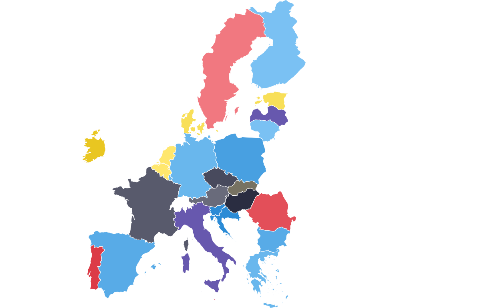
ADDING THE DOTTED BOXES
Continuing with the main map, two dotted boxes were required around the BENELUX region and Malta to indicate that these areas are represented in a “zoom” annotation.
The BENELUX dotted box was created by extracting the required countries from the map dataset, calculating their bounding box (i.e. the minimum rectangular coordinates that contain the required countries), defining the padding wanted around the boundaries of these countries for visual effect, and defining the final coordinates of the box.
# extracting required countries
benelux <- final_map |>
dplyr::filter(country %in% c("Belgium", "Netherlands", "Luxembourg"))
# defining the bounding box
bb <- sf::st_bbox(benelux)
# defining padding through trial-and-error
x_pad <- (bb["xmax"] - bb["xmin"]) * 0.07
y_pad <- (bb["ymax"] - bb["ymin"]) * 0.04
# defining the final coordinates of the box and storing as a data frame
benelux_box <- data.frame(
xmin = bb["xmin"] - x_pad,
xmax = bb["xmax"] + x_pad,
ymin = bb["ymin"] - y_pad,
ymax = bb["ymax"] + y_pad
)The same process was used to create the dotted outline for Malta.
# extracting required country
malta <- final_map |>
dplyr::filter(country == "Malta")
# defining the bounding box
mb <- sf::st_bbox(malta)
# defininf padding through trial and error
mx_pad <- (mb["xmax"] - mb["xmin"]) * 0.6
my_pad <- (mb["ymax"] - mb["ymin"]) * 0.4
# defining the final coordinates of the box and storing as a data frame
malta_box <- data.frame(
xmin = mb["xmin"] - mx_pad,
xmax = mb["xmax"] + mx_pad,
ymin = mb["ymin"] - my_pad,
ymax = mb["ymax"] + my_pad
)Following this, the background map was redrawn with the two dotted boxes applied using the geom_rect() function and defining the aesthetics of the rectangle (e.g. line style, colour, and weight). The aesthetics were adjusted manually until the boxes were visually as similar as possible to those on the original plot.
# redrawing the main map
EUROMAP <-
ggplot(final_map) +
geom_sf(aes(fill = party_band), color = "white", linewidth = 0.2) +
scale_fill_manual(values = fill_values, na.value = "grey90") +
theme_void() +
theme(legend.position = "none") +
# adding the BENELUX box and defining aesthstics
geom_rect(
data = benelux_box,
aes(xmin = xmin, xmax = xmax, ymin = ymin, ymax = ymax),
inherit.aes = FALSE,
colour = "black",
fill = NA,
linewidth = 0.4,
linetype = "11"
) +
# adding the Malta box and defining aesthetics
geom_rect(
data = malta_box,
aes(xmin = xmin, xmax = xmax, ymin = ymin, ymax = ymax),
inherit.aes = FALSE,
colour = "black",
fill = NA,
linewidth = 0.4,
linetype = "11"
)
EUROMAP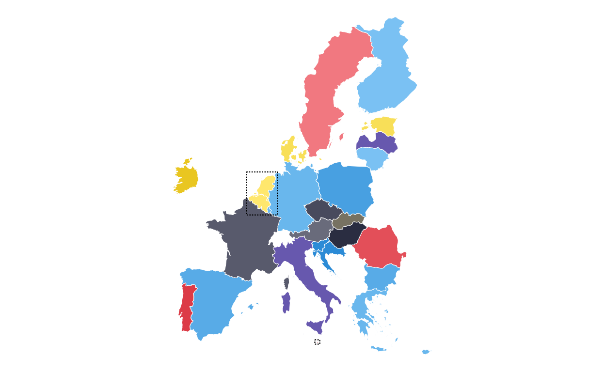
MAKING THE PARLIAMENT PLOTS
As the next stage of the project I decided to tackle the circular plots that are overlaid on the main map. These circular plots are a combination of two main elements - an inner circular parliament plot and an outer donut plot. These had to be made seperately and combined in a later stage of the project. The first part that was recreated were the parliament plots.
in order to make parliament plots in R there only really two options, “ggpol” and “ggparliament”. “ggpol” is limited to semicircular parliament plots, whereas “ggparliament” has specific functionality to create the circular parliament plots needed for this project, therefore the “ggparliament” package was the obvious choice.
DEBUGGING
Before talking about how the parliament plots were made, it is important to discuss an alteration that was made to the package code to debug an issue that was found in the plot recreation process. Whilst making the final parliament plots, it was clear in looking at the ones that contained only a handful of seats that there were points/ seats missing from the plot. After inspecting each outputted plot manually it became clear that this was consistent across all of the plots with the number of missing seats always being the same as the number of rows of seats in the plot.
After some substantial effort to find the issue, it was clear that the problem did not lie in the data or in the use of the package but rather in the code of the package itself. Inside the calc_coordinates() helper function, the position for the first and last row of seats in the plot were being defined as 0 and 360 degrees in the circle meaning that the first and last points of each row were being overlayed in the plot.
In order to remedy this, a small portion of the calc_coordinates() code was altered to add “ghost points” to each row that would take up the overlap, allowing the points that contained the actual data of the plot to remain visible. The final “debugging” code used to modify and overwrite the ggparliament package code was the following. (Please note, at the time of writing, this issue has been flagged to the ggparliament maintenance team but has not yet been remedied centrally so this fix still needs to be used).
fix_calc_coordinates <- function(N, M, limits, segment = 0.5) {
radii <- seq(limits[1], limits[2], length.out = M)
counts <- numeric(M)
pts <- do.call(rbind, lapply(seq_len(M), function(i) {
counts[i] <<- round(N * radii[i] / sum(radii[i:M]))
# FIX: generate one extra point then drop last when full circle
thetas <- seq(0, segment * 2 * pi, length.out = counts[i] + (segment == 1))
if (segment == 1) thetas <- head(thetas, -1)
N <<- N - counts[i]
data.frame(
x = radii[i] * cos(thetas),
y = radii[i] * sin(thetas),
row = i,
theta = thetas
)
}))
pts[order(-pts$theta, -pts$row), ]
}
# overwriting the internal function in the namespace:
assignInNamespace("calc_coordinates", fix_calc_coordinates, ns = "ggparliament")DEFINING THE PARLIAMENT PLOT FUNCTION
Now that the package was working as it should, the correctly-formatted parliament plots could be created. The original plot contains 27 different circular plots on top of the main map, however making 27 parliament plots manually would take a long time and require a lot of code. bearing this in mind, a function was defined to make the process quicker, more streamlined, and the output as identical as possible across all parliament plots. The function had to encompass several features including the function parameters, circle layout, boundary circle, seat point specification, order of parties, and colour specification.
The parliament plot making function was defined as follows:
# creating a parliament plot function
# defining the function parameters
make_parl_plot <- function(election_data,
parl_rows,
custom_cols,
circle_expand = 1.10, # how far beyond the outer row
point_size = 10) {
# creating the circle layout
circle_df <- ggparliament::parliament_data(
election_data = election_data,
type = "circle",
parl_rows = parl_rows,
party_seats = election_data$SEATS_TOTAL,
plot_order = election_data$plot_order
)
# calculating the boundary circle size using the distance form centre of the outermost seat position
r <- max(sqrt(circle_df$x^2 + circle_df$y^2))
r_out <- r * circle_expand
# building the plot and defining the aesthetics
# defining the circular "seat" points
p <- ggplot(circle_df, aes(x = y, y = x)) +
geom_point(
aes(fill = GROUP_ID),
shape = 21,
size = point_size,
colour = "black",
stroke = 0.4
) +
# defining the outer boundary circle
geom_circle(
data = data.frame(x0 = 0, y0 = 0, r = r_out),
aes(x0 = x0, y0 = y0, r = r),
inherit.aes = FALSE,
colour = "black",
linewidth = 0.8,
fill = NA
) +
# applying the global party colour scheme
scale_fill_manual(values = custom_cols) +
theme_ggparliament() +
coord_fixed(
ratio = 1,
xlim = c(-r_out, r_out),
ylim = c(-r_out, r_out)
) +
theme(legend.position = "none")
p
}PLOTTING
After the function was defined and tested, the 27 different parliament plots could be made relatively easily. The data for the parliament plots was taken directly from the 27 individual .csv filed downloaded from the European Parliament website.
# AUSTRIA
# IMPORT DATA
at <- read.csv(file = "100561659_files/Data/at.csv", sep = ";")
# CHANGING THE NAMES IN THE DATASET TO MATCH NAMES USED IN THE PLOT
at$GROUP_ID[at$GROUP_ID == "PfE"] <- "Patriots"
# MAKING FACTORS
at <- at |>
mutate(
# make sure GROUP_ID is a factor in your desired order
GROUP_ID = factor(GROUP_ID, levels = party_order),
# numeric order for parliament_data()
plot_order = as.numeric(GROUP_ID))
# PLOTTING THE PARLIAMENT PLOT USING THE FUNCITON
ATPARL <- make_parl_plot(
election_data = at,
parl_rows = 2,
custom_cols = custom_cols)
ATPARL
# BELGIUM
# IMPORT DATA
be <- read.csv(file = "100561659_files/Data/be.csv", sep = ";")
# CHANGING THE NAMES IN THE DATASET TO MATCH NAMES USED IN TH PLOT
be$GROUP_ID[be$GROUP_ID == "PfE"] <- "Patriots"
# MAKING FACTORS
be <- be |>
mutate(
# make sure GROUP_ID is a factor in your desired order
GROUP_ID = factor(GROUP_ID, levels = party_order),
# numeric order for parliament_data()
plot_order = as.numeric(GROUP_ID))
# PLOTTING THE PARLIAMENT PLOT USING THE FUNCITON
BEPARL <- make_parl_plot(
election_data = be,
parl_rows = 2,
custom_cols = custom_cols
)
BEPARL# BULGARIA
# IMPORT DATA
bg <- read.csv(file = "100561659_files/Data/bg.csv", sep = ";")
# CHANGING THE NAMES IN THE DATASET TO MATCH NAMES USED IN TH PLOT
bg$GROUP_ID[bg$GROUP_ID == "PfE"] <- "Patriots"
# MAKING FACTORS
bg <- bg |>
mutate(
# make sure GROUP_ID is a factor in your desired order
GROUP_ID = factor(GROUP_ID, levels = party_order),
# numeric order for parliament_data()
plot_order = as.numeric(GROUP_ID))
# PLOTTING THE PARLIAMENT PLOT USING THE FUNCITON
BGPARL <- make_parl_plot(
election_data = bg,
parl_rows = 1,
custom_cols = custom_cols
)
BGPARL
# CROATIA
# IMPORT DATA
hr <- read.csv(file = "100561659_files/Data/hr.csv", sep = ";")
# MAKING FACTORS
hr <- hr |>
mutate(
# make sure GROUP_ID is a factor in your desired order
GROUP_ID = factor(GROUP_ID, levels = party_order),
# numeric order for parliament_data()
plot_order = as.numeric(GROUP_ID))
# PLOTTING THE PARLIAMENT PLOT USING THE FUNCITON
HRPARL <- make_parl_plot(
election_data = hr,
parl_rows = 1,
custom_col = custom_cols
)
HRPARL# CYPRUS
# IMPORT DATA
cy <- read.csv(file = "100561659_files/Data/cy.csv", sep = ";")
# MAKING FACTORS
cy <- cy |>
mutate(
# make sure GROUP_ID is a factor in your desired order
GROUP_ID = factor(GROUP_ID, levels = party_order),
# numeric order for parliament_data()
plot_order = as.numeric(GROUP_ID))
# PLOTTING THE PARLIAMENT PLOT USING THE FUNCITON
CYPARL <- make_parl_plot(
election_data = cy,
parl_rows = 1,
custom_cols = custom_cols
)
CYPARL
# CZECHIA
# IMPORT DATA
cz <- read.csv(file = "100561659_files/Data/cz.csv", sep = ";")
# CHANGING THE NAMES IN THE DATASET TO MATCH NAMES USED IN TH PLOT
cz$GROUP_ID[cz$GROUP_ID == "PfE"] <- "Patriots"
# MAKING FACTORS
cz <- cz |>
mutate(
# make sure GROUP_ID is a factor in your desired order
GROUP_ID = factor(GROUP_ID, levels = party_order),
# numeric order for parliament_data()
plot_order = as.numeric(GROUP_ID))
# PLOTTING THE PARLIAMENT PLOT USING THE FUNCITON
CZPARL <- make_parl_plot(
election_data = cz,
parl_rows = 2,
custom_cols = custom_cols
)
CZPARL# DENMARK
# IMPORT DATA
dk <- read.csv(file = "100561659_files/Data/dk.csv", sep = ";")
# CHANGING THE NAMES IN THE DATASET TO MATCH NAMES USED IN TH PLOT
dk$GROUP_ID[dk$GROUP_ID == "PfE"] <- "Patriots"
# MAKING FACTORS
dk <- dk |>
mutate(
# make sure GROUP_ID is a factor in your desired order
GROUP_ID = factor(GROUP_ID, levels = party_order),
# numeric order for parliament_data()
plot_order = as.numeric(GROUP_ID))
# PLOTTING THE PARLIAMENT PLOT USING THE FUNCITON
DKPARL <- make_parl_plot(
election_data = dk,
parl_rows = 1,
custom_cols = custom_cols
)
DKPARL
# ESTONIA
# IMPORT DATA
ee <- read.csv(file = "100561659_files/Data/ee.csv", sep = ";")
# MAKING FACTORS
ee <- ee |>
mutate(
# make sure GROUP_ID is a factor in your desired order
GROUP_ID = factor(GROUP_ID, levels = party_order),
# numeric order for parliament_data()
plot_order = as.numeric(GROUP_ID))
# PLOTTING THE PARLIAMENT PLOT USING THE FUNCITON
EEPARL <- make_parl_plot(
election_data = ee,
parl_rows = 1,
custom_cols = custom_cols
)
EEPARL
# FINLAND
# IMPORT DATA
fi <- read.csv(file = "100561659_files/Data/fi.csv", sep = ";")
# MAKING FACTORS
fi <- fi |>
mutate(
# make sure GROUP_ID is a factor in your desired order
GROUP_ID = factor(GROUP_ID, levels = party_order),
# numeric order for parliament_data()
plot_order = as.numeric(GROUP_ID))
# PLOTTING THE PARLIAMENT PLOT USING THE FUNCITON
FIPARL <- make_parl_plot(
election_data = fi,
parl_rows = 1,
custom_cols = custom_cols
)
FIPARL
# FRANCE
# IMPORT DATA
fr <- read.csv(file = "100561659_files/Data/fr.csv", sep = ";")
# CHANGING THE NAMES IN THE DATASET TO MATCH NAMES USED IN TH PLOT
fr$GROUP_ID[fr$GROUP_ID == "PfE"] <- "Patriots"
# MAKING FACTORS
fr <- fr |>
mutate(
# make sure GROUP_ID is a factor in your desired order
GROUP_ID = factor(GROUP_ID, levels = party_order),
# numeric order for parliament_data()
plot_order = as.numeric(GROUP_ID))
# PLOTTING THE PARLIAMENT PLOT USING THE FUNCITON
FRPARL <- make_parl_plot(
election_data = fr,
parl_rows = 3,
custom_cols = custom_cols
)
FRPARL# GERMANY
# IMPORT DATA
de <- read.csv(file = "100561659_files/Data/de.csv", sep = ";")
# MAKING FACTORS
de <- de |>
mutate(
# make sure GROUP_ID is a factor in your desired order
GROUP_ID = factor(GROUP_ID, levels = party_order),
# numeric order for parliament_data()
plot_order = as.numeric(GROUP_ID))
# PLOTTING THE PARLIAMENT PLOT USING THE FUNCITON
DEPARL <- make_parl_plot(
election_data = de,
parl_rows = 4,
custom_cols = custom_cols
)
DEPARL
# GREECE
# IMPORT DATA
el <- read.csv(file = "100561659_files/Data/el.csv", sep = ";")
# CHANGING THE NAMES IN THE DATASET TO MATCH NAMES USED IN TH PLOT
el$GROUP_ID[el$GROUP_ID == "PfE"] <- "Patriots"
# MAKING FACTORS
el <- el |>
mutate(
# make sure GROUP_ID is a factor in your desired order
GROUP_ID = factor(GROUP_ID, levels = party_order),
# numeric order for parliament_data()
plot_order = as.numeric(GROUP_ID))
# PLOTTING THE PARLIAMENT PLOT USING THE FUNCITON
ELPARL <- make_parl_plot(
election_data = el,
parl_rows = 2,
custom_cols = custom_cols
)
ELPARL# HUNGARY
# IMPORT DATA
hu <- read.csv(file = "100561659_files/Data/hu.csv", sep = ";")
# CHANGING THE NAMES IN THE DATASET TO MATCH NAMES USED IN TH PLOT
hu$GROUP_ID[hu$GROUP_ID == "PfE"] <- "Patriots"
# MAKING FACTORS
hu <- hu |>
mutate(
# make sure GROUP_ID is a factor in your desired order
GROUP_ID = factor(GROUP_ID, levels = party_order),
# numeric order for parliament_data()
plot_order = as.numeric(GROUP_ID))
# PLOTTING THE PARLIAMENT PLOT USING THE FUNCITON
HUPARL <- make_parl_plot(
election_data = hu,
parl_rows = 2,
custom_cols = custom_cols
)
HUPARL# IRELAND
# IMPORT DATA
ie <- read.csv(file = "100561659_files/Data/ie.csv", sep = ";")
# MAKING FACTORS
ie <- ie |>
mutate(
# make sure GROUP_ID is a factor in your desired order
GROUP_ID = factor(GROUP_ID, levels = party_order),
# numeric order for parliament_data()
plot_order = as.numeric(GROUP_ID))
# PLOTTING THE PARLIAMENT PLOT USING THE FUNCITON
IEPARL <- make_parl_plot(
election_data = ie,
parl_rows = 1,
custom_cols = custom_cols
)
IEPARL# ITALY
# IMPORT DATA
it <- read.csv(file = "100561659_files/Data/it.csv", sep = ";")
# CHANGING THE NAMES IN THE DATASET TO MATCH NAMES USED IN TH PLOT
it$GROUP_ID[it$GROUP_ID == "PfE"] <- "Patriots"
# MAKING FACTORS
it <- it |>
mutate(
# make sure GROUP_ID is a factor in your desired order
GROUP_ID = factor(GROUP_ID, levels = party_order),
# numeric order for parliament_data()
plot_order = as.numeric(GROUP_ID))
# PLOTTING THE PARLIAMENT PLOT USING THE FUNCITON
ITPARL <- make_parl_plot(
election_data = it,
parl_rows = 3,
custom_cols = custom_cols
)
ITPARL# LATVIA
# IMPORT DATA
lv <- read.csv(file = "100561659_files/Data/lv.csv", sep = ";")
# CHANGING THE NAMES IN THE DATASET TO MATCH NAMES USED IN TH PLOT
lv$GROUP_ID[lv$GROUP_ID == "PfE"] <- "Patriots"
# MAKING FACTORS
lv <- lv |>
mutate(
# make sure GROUP_ID is a factor in your desired order
GROUP_ID = factor(GROUP_ID, levels = party_order),
# numeric order for parliament_data()
plot_order = as.numeric(GROUP_ID))
# PLOTTING THE PARLIAMENT PLOT USING THE FUNCITON
LVPARL <- make_parl_plot(
election_data = lv,
parl_rows = 1,
custom_cols = custom_cols
)
LVPARL
# LITHUANIA
# IMPORT DATA
lt <- read.csv(file = "100561659_files/Data/lt.csv", sep = ";")
# MAKING FACTORS
lt <- lt |>
mutate(
# make sure GROUP_ID is a factor in your desired order
GROUP_ID = factor(GROUP_ID, levels = party_order),
# numeric order for parliament_data()
plot_order = as.numeric(GROUP_ID))
# PLOTTING THE PARLIAMENT PLOT USING THE FUNCITON
LTPARL <- make_parl_plot(
election_data = lt,
parl_rows = 1,
custom_cols = custom_cols
)
LTPARL# LUXEMBOURG
# IMPORT DATA
lu <- read.csv(file = "100561659_files/Data/lu.csv", sep = ";")
# MAKING FACTORS
lu <- lu |>
mutate(
# make sure GROUP_ID is a factor in your desired order
GROUP_ID = factor(GROUP_ID, levels = party_order),
# numeric order for parliament_data()
plot_order = as.numeric(GROUP_ID))
# PLOTTING THE PARLIAMENT PLOT USING THE FUNCITON
LUPARL <- make_parl_plot(
election_data = lu,
parl_rows = 1,
custom_cols = custom_cols
)
LUPARL
# MALTA
# IMPORT DATA
mt <- read.csv(file = "100561659_files/Data/mt.csv", sep = ";")
# MAKING FACTORS
mt <- mt |>
mutate(
# make sure GROUP_ID is a factor in your desired order
GROUP_ID = factor(GROUP_ID, levels = party_order),
# numeric order for parliament_data()
plot_order = as.numeric(GROUP_ID))
# PLOTTING THE PARLIAMENT PLOT USING THE FUNCITON
MTPARL <- make_parl_plot(
election_data = mt,
parl_rows = 1,
custom_cols = custom_cols
)
MTPARL
# NETHERLANDS
# IMPORT DATA
nl <- read.csv(file = "100561659_files/Data/nl.csv", sep = ";")
# CHANGING THE NAMES IN THE DATASET TO MATCH NAMES USED IN TH PLOT
nl$GROUP_ID[nl$GROUP_ID == "PfE"] <- "Patriots"
# MAKING FACTORS
nl <- nl |>
mutate(
# make sure GROUP_ID is a factor in your desired order
GROUP_ID = factor(GROUP_ID, levels = party_order),
# numeric order for parliament_data()
plot_order = as.numeric(GROUP_ID))
# PLOTTING THE PARLIAMENT PLOT USING THE FUNCITON
NLPARL <- make_parl_plot(
election_data = nl,
parl_rows = 2,
custom_cols = custom_cols
)
NLPARL
# POLAND
# IMPORT DATA
pl <- read.csv(file = "100561659_files/Data/pl.csv", sep = ";")
# MAKING FACTORS
pl <- pl |>
mutate(
# make sure GROUP_ID is a factor in your desired order
GROUP_ID = factor(GROUP_ID, levels = party_order),
# numeric order for parliament_data()
plot_order = as.numeric(GROUP_ID))
# PLOTTING THE PARLIAMENT PLOT USING THE FUNCITON
PLPARL <- make_parl_plot(
election_data = pl,
parl_rows = 3,
custom_cols = custom_cols
)
PLPARL
# PORTUGAL
# IMPORT DATA
pt <- read.csv(file = "100561659_files/Data/pt.csv", sep = ";")
# CHANGING THE NAMES IN THE DATASET TO MATCH NAMES USED IN TH PLOT
pt$GROUP_ID[pt$GROUP_ID == "PfE"] <- "Patriots"
# MAKING FACTORS
pt <- pt |>
mutate(
# make sure GROUP_ID is a factor in your desired order
GROUP_ID = factor(GROUP_ID, levels = party_order),
# numeric order for parliament_data()
plot_order = as.numeric(GROUP_ID))
# PLOTTING THE PARLIAMENT PLOT USING THE FUNCITON
PTPARL <- make_parl_plot(
election_data = pt,
parl_rows = 2,
custom_cols = custom_cols
)
PTPARL
# ROMANIA
# IMPORT DATA
ro <- read.csv(file = "100561659_files/Data/ro.csv", sep = ";")
# MAKING FACTORS
ro <- ro |>
mutate(
# make sure GROUP_ID is a factor in your desired order
GROUP_ID = factor(GROUP_ID, levels = party_order),
# numeric order for parliament_data()
plot_order = as.numeric(GROUP_ID))
# PLOTTING THE PARLIAMENT PLOT USING THE FUNCITON
ROPARL <- make_parl_plot(
election_data = ro,
parl_rows = 2,
custom_cols = custom_cols
)
ROPARL# SLOVAKIA
# IMPORT DATA
sk <- read.csv(file = "100561659_files/Data/sk.csv", sep = ";")
# MAKING FACTORS
sk <- sk |>
mutate(
# make sure GROUP_ID is a factor in your desired order
GROUP_ID = factor(GROUP_ID, levels = party_order),
# numeric order for parliament_data()
plot_order = as.numeric(GROUP_ID))
# PLOTTING THE PARLIAMENT PLOT USING THE FUNCITON
SKPARL <- make_parl_plot(
election_data = sk,
parl_rows = 1,
custom_cols = custom_cols
)
SKPARL# SLOVENIA
# IMPORT DATA
si <- read.csv(file = "100561659_files/Data/si.csv", sep = ";")
# MAKING FACTORS
si <- si |>
mutate(
# make sure GROUP_ID is a factor in your desired order
GROUP_ID = factor(GROUP_ID, levels = party_order),
# numeric order for parliament_data()
plot_order = as.numeric(GROUP_ID))
# PLOTTING THE PARLIAMENT PLOT USING THE FUNCITON
SIPARL <- make_parl_plot(
election_data = si,
parl_rows = 1,
custom_cols = custom_cols
)
SIPARL
# SPAIN
# IMPORT DATA
es <- read.csv(file = "100561659_files/Data/es.csv", sep = ";")
# CHANGING THE NAMES IN THE DATASET TO MATCH NAMES USED IN TH PLOT
es$GROUP_ID[es$GROUP_ID == "PfE"] <- "Patriots"
# MAKING FACTORS
es <- es |>
mutate(
# make sure GROUP_ID is a factor in your desired order
GROUP_ID = factor(GROUP_ID, levels = party_order),
# numeric order for parliament_data()
plot_order = as.numeric(GROUP_ID))
# PLOTTING THE PARLIAMENT PLOT USING THE FUNCITON
ESPARL <- make_parl_plot(
election_data = es,
parl_rows = 3,
custom_cols = custom_cols
)
ESPARL
# SWEDEN
# IMPORT DATA
se <- read.csv(file = "100561659_files/Data/se.csv", sep = ";")
# MAKING FACTORS
se <- se |>
mutate(
# make sure GROUP_ID is a factor in your desired order
GROUP_ID = factor(GROUP_ID, levels = party_order),
# numeric order for parliament_data()
plot_order = as.numeric(GROUP_ID))
# PLOTTING THE PARLIAMENT PLOT USING THE FUNCITON
SEPARL <- make_parl_plot(
election_data = se,
parl_rows = 2,
custom_cols = custom_cols
)
SEPARL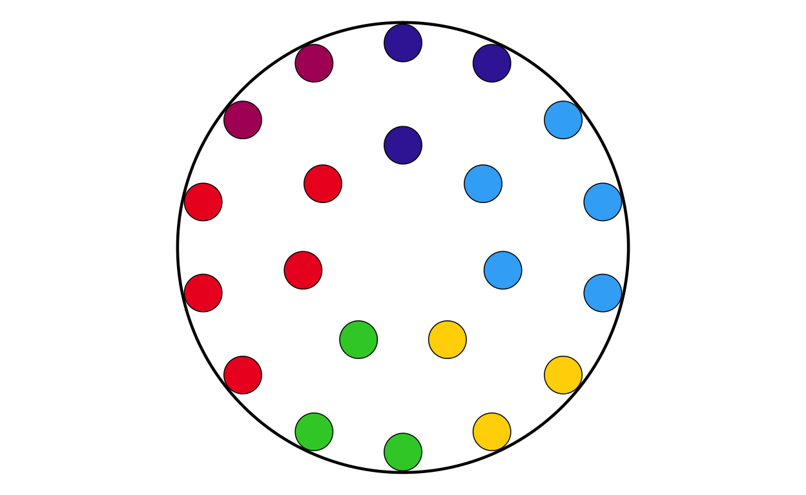
MAKING THE DONUT PLOTS
After successfully making the parliament plots for each country, the next stage was to make the donut plots that surround the parliament plots in the original plot. There is no function to explicitly make donut plots in ggplot, however using a single stacked bar chart bent into a circle (as is used to make a pie chart) using polar coordinates appears to be the agreed-upon solution in the R community. There are some specialised packages like “donutsk” that have been developed to make donut plots, however after experimenting with this package and ggplot it was decided that for the basic, non-annotated donuts required for this project that the bent-bar-plot approach using ggplot was best suited.
DATA RECREATION
As discussed earlier, the data required to create the donut plots had to be manually calculated and the datasets constructed in R.
# AUSTRIA
don_at <- data.frame(
party = c("EPP", "SD", "Patriots", "ECR", "Renew", "GREENSEFA", "Theleft", "ESN", "NI", "Independent"),
vote_proportion = c(24.52, 23.22, 25.36, 0.00, 10.14, 11.08, 2.96, 0.00, 0.00, 2.72))
# check that total proportion = 100
sum(don_at$vote_proportion)[1] 100# BELGIUM
don_be <- data.frame(
party = c("EPP", "SD", "Patriots", "ECR", "Renew", "GREENSEFA", "Theleft", "ESN", "NI", "Independent"),
vote_proportion = c(16.04, 14.99, 7.65, 7.36, 28.3, 10.39, 7.8, 0.00, 0.00, 7.47))
# check that total proportion = 100
sum(don_be$vote_proportion)[1] 100# BULGARIA
don_bg <- data.frame(
party = c("EPP", "SD", "Patriots", "ECR", "Renew", "GREENSEFA", "Theleft", "ESN", "NI", "Independent"),
vote_proportion = c(24.79, 7.01, 0.00, 8.13, 29.11, 1.26, 1.23, 13.98, 0.00, 14.49))
# check that total proportion = 100
sum(don_bg$vote_proportion)[1] 100# CROATIA
don_hr <- data.frame(
party = c("EPP", "SD", "Patriots", "ECR", "Renew", "GREENSEFA", "Theleft", "ESN", "NI", "Independent"),
vote_proportion = c(35.83, 25.62, 0.00, 12.85, 5.69, 6.15, 0.63, 0.00, 2.98, 10.25))
# check that total proportion = 100
sum(don_hr$vote_proportion)[1] 100# CYPRUS
don_cy <- data.frame(
party = c("EPP", "SD", "Patriots", "ECR", "Renew", "GREENSEFA", "Theleft", "ESN", "NI", "Independent"),
vote_proportion = c(24.78, 14.79, 0.00, 2.17, 11.19, 4.21, 21.49, 0.00, 19.36, 2.01))
# check that total proportion = 100
sum(don_cy$vote_proportion)[1] 100# CZECHIA
don_cz <- data.frame(
party = c("EPP", "SD", "Patriots", "ECR", "Renew", "GREENSEFA", "Theleft", "ESN", "NI", "Independent"),
vote_proportion = c(19.84, 1.86, 36.9, 11.13, 0.21, 8.09, 0.00, 7.88, 9.56, 4.53))
# check that total proportion = 100
sum(don_cz$vote_proportion)[1] 100# DENMARK
don_dk <- data.frame(
party = c("EPP", "SD", "Patriots", "ECR", "Renew", "GREENSEFA", "Theleft", "ESN", "NI", "Independent"),
vote_proportion = c(15.79, 15.57, 6.37, 27.75, 7.39, 20.08, 7.05, 0.00, 0.00, 0.00))
# check that total proportion = 100
sum(don_dk$vote_proportion)[1] 100# ESTONIA
don_ee <- data.frame(
party = c("EPP", "SD", "Patriots", "ECR", "Renew", "GREENSEFA", "Theleft", "ESN", "NI", "Independent"),
vote_proportion = c(21.51, 19.33, 14.86, 6.22, 24.14, 0.61, 0.00, 0.00, 0.00, 13.33))
# check that total proportion = 100
sum(don_ee$vote_proportion)[1] 100# FINLAND
don_fi <- data.frame(
party = c("EPP", "SD", "Patriots", "ECR", "Renew", "GREENSEFA", "Theleft", "ESN", "NI", "Independent"),
vote_proportion = c(28.92, 14.87, 0.00, 17.90, 7.61, 11.28, 17.47, 0.00, 0.00, 1.95))
# check that total proportion = 100
sum(don_fi$vote_proportion)[1] 100# FRANCE
don_fr <- data.frame(
party = c("EPP", "SD", "Patriots", "ECR", "Renew", "GREENSEFA", "Theleft", "ESN", "NI", "Independent"),
vote_proportion = c(7.25, 13.88, 31.37, 0.00, 15.02, 5.76, 14.40, 5.47, 0.00, 6.85))
# check that total proportion = 100
sum(don_fr$vote_proportion)[1] 100# GERMANY
don_de <- data.frame(
party = c("EPP", "SD", "Patriots", "ECR", "Renew", "GREENSEFA", "Theleft", "ESN", "NI", "Independent"),
vote_proportion = c(31.28, 13.94, 0.00, 0.41, 7.85, 14.94, 4.17, 15.89, 8.12, 3.40 ))
# check that total proportion = 100
sum(don_de$vote_proportion)[1] 100# GREECE
don_el <- data.frame(
party = c("EPP", "SD", "Patriots", "ECR", "Renew", "GREENSEFA", "Theleft", "ESN", "NI", "Independent"),
vote_proportion = c(28.31, 12.79, 3.04, 9.30, 1.45, 1.80, 17.46, 0.52, 17.02, 8.31))
# check that total proportion = 100
sum(don_el$vote_proportion)[1] 100# HUNGARY
don_hu <- data.frame(
party = c("EPP", "SD", "Patriots", "ECR", "Renew", "GREENSEFA", "Theleft", "ESN", "NI", "Independent"),
vote_proportion = c(30.59, 8.03, 44.82, 0.00, 4.34, 4.46, 0.00, 6.71, 0.00, 1.05))
# check that total proportion = 100
sum(don_hu$vote_proportion)[1] 100# IRELAND
don_ie <- data.frame(
party = c("EPP", "SD", "Patriots", "ECR", "Renew", "GREENSEFA", "Theleft", "ESN", "NI", "Independent"),
vote_proportion = c(20.79, 6.33, 0.00, 0.00, 26.67, 5.36, 19.46, 0.00, 0.00, 21.39))
# check that total proportion = 100
sum(don_ie$vote_proportion)[1] 100# ITALY
don_it <- data.frame(
party = c("EPP", "SD", "Patriots", "ECR", "Renew", "GREENSEFA", "Theleft", "ESN", "NI", "Independent"),
vote_proportion = c(10.50, 24.11, 8.97, 28.76, 7.13, 6.78, 10.11, 0.00, 0.00, 3.64))
# check that total proportion = 100
sum(don_it$vote_proportion)[1] 100# LATVIA
don_lv <- data.frame(
party = c("EPP", "SD", "Patriots", "ECR", "Renew", "GREENSEFA", "Theleft", "ESN", "NI", "Independent"),
vote_proportion = c(25.37, 7.21, 6.23, 33.24, 9.46, 7.53, 0.00, 0.00, 0.00, 10.96))
# check that total proportion = 100
sum(don_lv$vote_proportion)[1] 100# LITHUANIA
don_lt <- data.frame(
party = c("EPP", "SD", "Patriots", "ECR", "Renew", "GREENSEFA", "Theleft", "ESN", "NI", "Independent"),
vote_proportion = c(22.70, 17.98, 0.00, 18.40, 13.52, 5.95, 0.00, 5.45, 0.00, 16.00))
# check that total proportion = 100
sum(don_lt$vote_proportion)[1] 100# LUXEMBOURG
don_lu <- data.frame(
party = c("EPP", "SD", "Patriots", "ECR", "Renew", "GREENSEFA", "Theleft", "ESN", "NI", "Independent"),
vote_proportion = c(22.91, 21.72, 0.00, 11.76, 18.29, 17.72, 3.15, 0.00, 0.00, 4.45))
# check that total proportion = 100
sum(don_lu$vote_proportion)[1] 100# MALTA
don_mt <- data.frame(
party = c("EPP", "SD", "Patriots", "ECR", "Renew", "GREENSEFA", "Theleft", "ESN", "NI", "Independent"),
vote_proportion = c(42.22, 45.26, 0.00, 0.00, 0.00, 1.3, 0.00, 0.00, 0.00, 11.22))
# check that total proportion = 100
sum(don_mt$vote_proportion)[1] 100# NETHERLANDS
don_nl <- data.frame(
party = c("EPP", "SD", "Patriots", "ECR", "Renew", "GREENSEFA", "Theleft", "ESN", "NI", "Independent"),
vote_proportion = c(18.61, 11.00, 16.97, 3.84, 20.87, 16.39, 6.72, 2.49, 0.00, 3.11))
# check that total proportion = 100
sum(don_nl$vote_proportion)[1] 100# POLAND
don_pl <- data.frame(
party = c("EPP", "SD", "Patriots", "ECR", "Renew", "GREENSEFA", "Theleft", "ESN", "NI", "Independent"),
vote_proportion = c(40.18, 3.90, 2.79, 36.16, 2.60, 0.00, 0.00, 3.19, 3.50, 7.68))
# check that total proportion = 100
sum(don_pl$vote_proportion)[1] 100# PORTUGAL
don_pt <- data.frame(
party = c("EPP", "SD", "Patriots", "ECR", "Renew", "GREENSEFA", "Theleft", "ESN", "NI", "Independent"),
vote_proportion = c(31.12, 32.11, 9.79, 0.00, 9.08, 5.18, 10.56, 0.00, 0.00, 2.16))
# check that total proportion = 100
sum(don_pt$vote_proportion)[1] 100# ROMANIA
don_ro <- data.frame(
party = c("EPP", "SD", "Patriots", "ECR", "Renew", "GREENSEFA", "Theleft", "ESN", "NI", "Independent"),
vote_proportion = c(30.76, 25.75, 0.00, 15.38, 12.45, 0.00, 0.42, 0.00, 5.03, 10.21))
# check that total proportion = 100
sum(don_ro$vote_proportion)[1] 100# SLOVAKIA
don_sk <- data.frame(
party = c("EPP", "SD", "Patriots", "ECR", "Renew", "GREENSEFA", "Theleft", "ESN", "NI", "Independent"),
vote_proportion = c(17.74, 0.00, 0.00, 5.55, 27.82, 0.13, 0.00, 12.53, 32.43, 3.8))
# check that total proportion = 100
sum(don_sk$vote_proportion)[1] 100# SLOVENIA
don_si <- data.frame(
party = c("EPP", "SD", "Patriots", "ECR", "Renew", "GREENSEFA", "Theleft", "ESN", "NI", "Independent"),
vote_proportion = c(45.41, 7.77, 0.00, 0.00, 24.35, 12.15, 4.81, 0.00, 0.00, 5.51))
# check that total proportion = 100
sum(don_si$vote_proportion)[1] 100# SPAIN
don_es <- data.frame(
party = c("EPP", "SD", "Patriots", "ECR", "Renew", "GREENSEFA", "Theleft", "ESN", "NI", "Independent"),
vote_proportion = c(34.21, 30.19, 9.63, 4.58, 3.1, 5.86, 7.28, 0.00, 2.61, 2.54))
# check that total proportion = 100
sum(don_es$vote_proportion)[1] 100# SWEDEN
don_se <- data.frame(
party = c("EPP", "SD", "Patriots", "ECR", "Renew", "GREENSEFA", "Theleft", "ESN", "NI", "Independent"),
vote_proportion = c(23.86, 24.77, 0.00, 13.17, 11.67, 14.22, 11.06, 0.00, 0.04, 1.21))
# check that total proportion = 100
sum(don_se$vote_proportion)[1] 100DEFINING THE DONUT PLOT FUNCTION
Following the same thinking as with the parliament plots, it was decided that individually coding 27 different donut plots would be unnecessarily time consuming and too large of a chunk of code. Again, a function was defined to streamline and regulate the donut plot making process.
The function had to encompass several features including the function parameters, the construction of the bar chart, the applicatin of polar coordinates, the white background, and the creation of the “donut hole” in the centre of the polar plot.
The donut plot making function was defined as follows:
# creating a donut plot function
# defining the function parameters
make_donut <- function(data,
party_col = party,
value_col = vote_proportion,
width_mm = 0.2) {
# data preparation: converting party to a factor and reversing the levels with fct_rev()to correct visuals
data_prepped <- data |>
mutate(
party = factor({{ party_col }}, levels = party_order),
party = forcats::fct_rev(party)
) |>
arrange(party)
# calculating the outer edge of the donut
donut_outer <- 2 + width_mm/2
# constructing the donut
p <- ggplot(data_prepped,
aes(x = 2, y = {{ value_col }}, fill = party)) +
# defining the white background
annotate("rect",
xmin = 0.5, xmax = donut_outer,
ymin = 0, ymax = 100,
fill = "white", colour = NA) +
# defining the thickness of the bar
geom_col(width = width_mm) +
# wrapping the bar into a circle
coord_polar(theta = "y") +
# spplying globally specified colours
scale_fill_manual(values = custom_cols, drop = FALSE) +
# defining the centre hole of the donut
xlim(0.5, 2.5) +
# adjusting the theme
theme_void() +
theme(legend.position = "none")
p
}PLOTTING
Now that the donut plot making function has been defined (and tested???) the 27 individual donut plots required to recreate the original plot can be created.
# AUSTRIA
donut_at <- make_donut(don_at)
donut_at# BELGIUM
donut_be <- make_donut(don_be)
donut_be
# BULGARIA
donut_bg <- make_donut(don_bg)
donut_bg# CROATIA
donut_hr <- make_donut(don_hr)
donut_hr
# CYPRUS
donut_cy <- make_donut(don_cy)
donut_cy# CZECHIA
donut_cz <- make_donut(don_cz)
donut_cz# DENMARK
donut_dk <- make_donut(don_dk)
donut_dk
# ESTONIA
donut_ee <- make_donut(don_ee)
donut_ee
# FINLAND
donut_fi <- make_donut(don_fi)
donut_fi
# FRANCE
donut_fr <- make_donut(don_fr)
donut_fr
# GERMANY
donut_de <- make_donut(don_de)
donut_de
# GREECE
donut_el <- make_donut(don_el)
donut_el# HUNGARY
donut_hu <- make_donut(don_hu)
donut_hu# IRELAND
donut_ie <- make_donut(don_ie)
donut_ie
# ITALY
donut_it <- make_donut(don_it)
donut_it
# LATVIA
donut_lv <- make_donut(don_lv)
donut_lv# LITHUANIA
donut_lt <- make_donut(don_lt)
donut_lt
# LUXEMBOURG
donut_lu <- make_donut(don_lu)
donut_lu
# MALTA
donut_mt <- make_donut(don_mt)
donut_mt
# NETHERLANDS
donut_nl <- make_donut(don_nl)
donut_nl
# POLAND
donut_pl <- make_donut(don_pl)
donut_pl
# PORTUGAL
donut_pt <- make_donut(don_pt)
donut_pt
# ROMANIA
donut_ro <- make_donut(don_ro)
donut_ro
# SLOVAKIA
donut_sk <- make_donut(don_sk)
donut_sk
# SLOVENIA
donut_si <- make_donut(don_si)
donut_si
# SPAIN
donut_es <- make_donut(don_es)
donut_es# SWEDEN
donut_se <- make_donut(don_se)
donut_se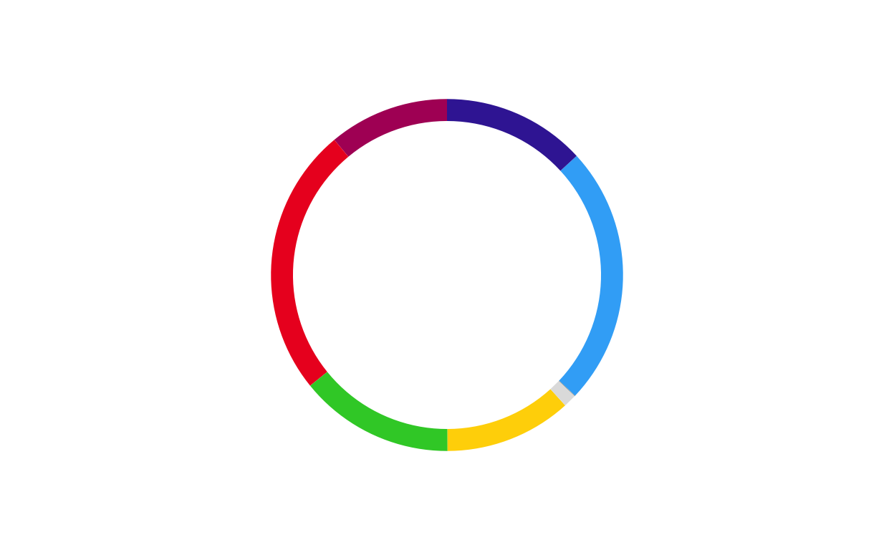
COMBINING THE PARLIAMENT AND DONUT PLOTS
After both the parliament and donut plots were created, the next stage of the replication process was to combine them into a single, layered combination plot for each country.
The function had to encompass several features including… *****
DEFINING THE COMBINATION PLOT FUNCTION
For a third time, a function was defined to streamline and standardise the creation process for all 27 plots.
The final combination plot function was defined as follows:
# creating a combination plot function
# defining the function parameters
combine_donut_parliament <- function(
donut_plot,
parliament_plot,
inner_width = 0.72,
donut_scale = 1.20,
start_angle = 0,
ring_divisor = 1.89,
ring_color = "black",
ring_lwd = 3
) {
# defining the layering strategy using ggdraw
ggdraw() +
# positioning the outer donut including scale and rotation
draw_plot(
donut_plot + coord_polar(theta = "y", start = start_angle),
x = (1 - donut_scale) / 2,
y = (1 - donut_scale) / 2,
width = donut_scale,
height = donut_scale
) +
# positioning the inner parliament plot
draw_plot(
parliament_plot,
x = (1 - inner_width) / 2,
y = (1 - inner_width) / 2,
width = inner_width,
height = inner_width
) +
# defining the inner black ring
draw_grob(
circleGrob(
x = 0.5, y = 0.5,
r = inner_width / ring_divisor,
gp = gpar(fill = NA, col = ring_color, lwd = ring_lwd)
)
)
}PLOTTING
The above function was then used to create the 27 combination circular plots to be used in the final product.
# AUSTRIA
at_final <- combine_donut_parliament(
donut_plot = donut_at,
parliament_plot = ATPARL,
inner_width = 0.72,
donut_scale = 1.20,
start_angle = 0
)
at_final
# BELGIUM
be_final <- combine_donut_parliament(
donut_plot = donut_be,
parliament_plot = BEPARL,
inner_width = 0.72,
donut_scale = 1.20,
start_angle = 0
)
be_final# BULGARIA
bg_final <- combine_donut_parliament(
donut_plot = donut_bg,
parliament_plot = BGPARL,
inner_width = 0.72,
donut_scale = 1.20,
start_angle = 0
)
bg_final# CROATIA
hr_final <- combine_donut_parliament(
donut_plot = donut_hr,
parliament_plot = HRPARL,
inner_width = 0.72,
donut_scale = 1.20,
start_angle = 0
)
hr_final# CYPRUS
cy_final <- combine_donut_parliament(
donut_plot = donut_cy,
parliament_plot = CYPARL,
inner_width = 0.72,
donut_scale = 1.20,
start_angle = 0
)
cy_final
# CZECH REPUBLIC
cz_final <- combine_donut_parliament(
donut_plot = donut_cz,
parliament_plot = CZPARL,
inner_width = 0.72,
donut_scale = 1.20,
start_angle = 0
)
cz_final# DENMARK
dk_final <- combine_donut_parliament(
donut_plot = donut_dk,
parliament_plot = DKPARL,
inner_width = 0.72,
donut_scale = 1.20,
start_angle = 0
)
dk_final
# ESTONIA
ee_final <- combine_donut_parliament(
donut_plot = donut_ee,
parliament_plot = EEPARL,
inner_width = 0.72,
donut_scale = 1.20,
start_angle = 0
)
ee_final
# FINLAND
fi_final <- combine_donut_parliament(
donut_plot = donut_fi,
parliament_plot = FIPARL,
inner_width = 0.72,
donut_scale = 1.20,
start_angle = 0
)
fi_final
# FRANCE
fr_final <- combine_donut_parliament(
donut_plot = donut_fr,
parliament_plot = FRPARL,
inner_width = 0.72,
donut_scale = 1.20,
start_angle = 0
)
fr_final
# GERMANY
de_final <- combine_donut_parliament(
donut_plot = donut_de,
parliament_plot = DEPARL,
inner_width = 0.72,
donut_scale = 1.20,
start_angle = 0
)
de_final
# GREECE
el_final <- combine_donut_parliament(
donut_plot = donut_el,
parliament_plot = ELPARL,
inner_width = 0.72,
donut_scale = 1.20,
start_angle = 0
)
el_final# HUNGARY
hu_final <- combine_donut_parliament(
donut_plot = donut_hu,
parliament_plot = HUPARL,
inner_width = 0.72,
donut_scale = 1.20,
start_angle = 0
)
hu_final
# IRELAND
ie_final <- combine_donut_parliament(
donut_plot = donut_ie,
parliament_plot = IEPARL,
inner_width = 0.72,
donut_scale = 1.20,
start_angle = 0
)
ie_final# ITALY
it_final <- combine_donut_parliament(
donut_plot = donut_it,
parliament_plot = ITPARL,
inner_width = 0.72,
donut_scale = 1.20,
start_angle = 0
)
it_final
# LATVIA
lv_final <- combine_donut_parliament(
donut_plot = donut_lv,
parliament_plot = LVPARL,
inner_width = 0.72,
donut_scale = 1.20,
start_angle = 0
)
lv_final
# LITHUANIA
lt_final <- combine_donut_parliament(
donut_plot = donut_lt,
parliament_plot = LTPARL,
inner_width = 0.72,
donut_scale = 1.20,
start_angle = 0
)
lt_final
# LUXEMBOURG
lu_final <- combine_donut_parliament(
donut_plot = donut_lu,
parliament_plot = LUPARL,
inner_width = 0.72,
donut_scale = 1.20,
start_angle = 0
)
lu_final
# MALTA
mt_final <- combine_donut_parliament(
donut_plot = donut_mt,
parliament_plot = MTPARL,
inner_width = 0.72,
donut_scale = 1.20,
start_angle = 0
)
mt_final
# NETHERLANDS
nl_final <- combine_donut_parliament(
donut_plot = donut_nl,
parliament_plot = NLPARL,
inner_width = 0.72,
donut_scale = 1.20,
start_angle = 0
)
nl_final# POLAND
pl_final <- combine_donut_parliament(
donut_plot = donut_pl,
parliament_plot = PLPARL,
inner_width = 0.72,
donut_scale = 1.20,
start_angle = 0
)
pl_final# PORTUGAL
pt_final <- combine_donut_parliament(
donut_plot = donut_pt,
parliament_plot = PTPARL,
inner_width = 0.72,
donut_scale = 1.20,
start_angle = 0
)
pt_final
# ROMANIA
ro_final <- combine_donut_parliament(
donut_plot = donut_ro,
parliament_plot = ROPARL,
inner_width = 0.72,
donut_scale = 1.20,
start_angle = 0
)
ro_final# SLOVAKIA
sk_final <- combine_donut_parliament(
donut_plot = donut_sk,
parliament_plot = SKPARL,
inner_width = 0.72,
donut_scale = 1.20,
start_angle = 0
)
sk_final
# SLOVENIA
si_final <- combine_donut_parliament(
donut_plot = donut_si,
parliament_plot = SIPARL,
inner_width = 0.72,
donut_scale = 1.20,
start_angle = 0
)
si_final
# SPAIN
es_final <- combine_donut_parliament(
donut_plot = donut_es,
parliament_plot = ESPARL,
inner_width = 0.72,
donut_scale = 1.20,
start_angle = 0
)
es_final# SWEDEN
se_final <- combine_donut_parliament(
donut_plot = donut_se,
parliament_plot = SEPARL,
inner_width = 0.72,
donut_scale = 1.20,
start_angle = 0
)
se_final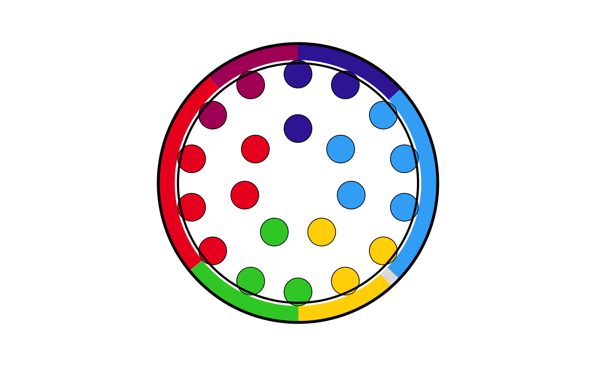
POSITIONING THE COMBO PLOTS ON THE MAP
At this stage of the project, the main background map and the individual combination plots for each country have been created. The next logical step was to place each plot on its relevant position on the map.
Before writing any code, some practical decisions had to be made about sizing. The circular plots on the original visualisation vary in size quite dramatically however there is not indication as to what the sizing of the plots is based off (if it is based off any concrete value at all). Looking at the plot it was obvious that “bigger” countries in terms of size/ population had bigger plots and “smaller” countries had smaller ones. This is also true in terms of number of seats, those with a larger number of seats had bigger plots and those with less seats had smaller plots. Using some trial and error to test size as both a function of seat number and population, it was decided that scaling the plots using a log function based on the population for each country gave the closest representation to the original.
DATA CONSTRUCTION
First, a data frame containing the country names, codes, and population was created
eu_populations <- data.frame(
country = c("Austria", "Bulgaria", "Croatia", "Czechia", "Denmark", "Estonia", "Finland", "France", "Germany", "Greece", "Hungary", "Ireland", "Italy", "Latvia", "Lithuania", "Poland", "Portugal", "Romania", "Slovakia", "Slovenia", "Spain", "Sweden"),
country_code = c("at", "bg", "hr", "cz", "dk", "ee", "fi", "fr", "de", "el", "hu", "ie", "it", "lv", "lt","pl", "pt", "ro", "sk", "si", "es", "se"),
population = c(9100000, 6400000, 3900000, 10900000, 5900000, 1400000, 5600000, 68200000, 84400000, 10400000, 9600000, 5200000, 59000000, 1800000, 2900000, 36800000, 10500000, 19100000, 5400000, 2100000, 48100000, 10600000)
)SCALING
Next, a plot size was assigned to each country’s circular plot based on its population, using a logarithmic scale. Trial and error was used to adjust the function to the specification that produced the closest visual representation to the original plot - it was important that the smallest countries were not invisible and that the biggest countries did not overtake the entire plot.
The position of the circular plots on the main map was determined using the centroids of the country areas included in the main map dataset. First, a dataset including the size of the plots and their final position was needed.
# positioning the circular plots on the map
# copmbining the country geometries to make one row per country with a merged geometry
country_centroids <- final_map |>
group_by(country) |>
summarise(
geometry = st_union(geometry),
.groups = "drop"
) |>
st_as_sf()
# calculating the centroids
centroids <- st_centroid(country_centroids)
# extracting the coordinates of the centroids
centroid_coords <- st_coordinates(centroids)
# adding the centroid coordinates to the dataset
country_centroids <- country_centroids |>
st_drop_geometry() |>
mutate(
centroid_x = centroid_coords[, "X"],
centroid_y = centroid_coords[, "Y"]
)
# combining with the plot sizes
country_data <- country_centroids |>
inner_join(country_sizes, by = "country")Then the existing combination plots were saved as .png images and a dataset including country names, centroid coordinates, plot sizes, and path to each saved image were created
# saving the combination plots as .png images
# creating an output directory
output_dir <- "combined_plots"
dir.create(output_dir, showWarnings = FALSE)
country_data$image_path <- NA_character_
# processing each country in a loop and extracting country information
for (i in seq_len(nrow(country_data))) {
country_name <- country_data$country[i]
country_code <- country_data$country_code[i]
plot_size <- country_data$plot_size[i]
# retrieving the plot objects
plot_name <- paste0(country_code, "_final")
existing_plot <- get(plot_name)
# crearing a file path where the images are saved
img_file <- file.path(output_dir, paste0(country_name, ".png"))
# saving the plot
ggsave(
filename = img_file,
plot = existing_plot,
width = plot_size,
height = plot_size,
dpi = 300,
bg = "transparent"
)
country_data$image_path[i] <- img_file
}
# printing a confirmation message once all files are saved
cat("\nSaved plots to:", output_dir, "\n")
Saved plots to: combined_plots cd_plot <- country_dataSome plots in areas with many smaller countries were overlapping slightly when overlaid onto the main plot, but reducing the lower size of the plots even more was not possible due to readability and not aligning with the visuals of the original plot. To take care of these overlaps a repulsion algorithm was employed.
# dealing with the overlapping circular plots
# calculating the image sizes suitable for plotting onto the map
cd_plot <- cd_plot |>
mutate(
geom_size = plot_size * 0.015 # adjusted using trial and error
)
# converting to map units using the bounding box of the entire map area
bbox <- st_bbox(final_map)
y_range <- as.numeric(bbox["ymax"] - bbox["ymin"])
# approximating the circle radiuses in map units
cd_plot <- cd_plot |>
mutate(
img_height_data = geom_size * y_range,
radius = img_height_data / 2
)
# setting up the repulsion algorithm
coords <- as.matrix(cd_plot[, c("centroid_x", "centroid_y")])
radii <- cd_plot$radius
# defining the extra spacing between circles (in data units)
circle_padding <- 0.01 * y_range
# the repulsion algorithm
max_iter <- 100
for (iter in seq_len(max_iter)) {
moved <- FALSE
# checking every pair of countries
for (i in seq_len(nrow(coords))) {
for (j in seq_len(nrow(coords))) {
if (j <= i) next
# calculating the distance between circles
dx <- coords[j, 1] - coords[i, 1]
dy <- coords[j, 2] - coords[i, 2]
dist <- sqrt(dx^2 + dy^2)
# checking for overlap (using the sum of both radii plus padding)
min_dist <- radii[i] + radii[j] + circle_padding
# pushing apart overlapping circles
if (dist < min_dist) {
overlap <- min_dist - dist
shift_x <- (dx / dist) * (overlap / 2)
shift_y <- (dy / dist) * (overlap / 2)
coords[i, 1] <- coords[i, 1] - shift_x
coords[i, 2] <- coords[i, 2] - shift_y
coords[j, 1] <- coords[j, 1] + shift_x
coords[j, 2] <- coords[j, 2] + shift_y
moved <- TRUE
}
}
}
# stopping if an entire iteration passes with no movements
if (!moved) break
}
# storing the adjusted positions
cd_plot <- cd_plot |>
mutate(
adj_x = coords[, 1],
adj_y = coords[, 2],
padding_factor = 0.002,
label_padding = padding_factor * y_range,
label_y = adj_y + radius + label_padding
)Furthermore, the circular plots in the original visualisation each have a heading of the country’s name above the plot. This also had to be included at this stage in order to check that no more fine-tuning of the positioning of the circular plots on the map was needed.
Finally, we draw the map with the combinations in their adjusted positions and their country name labels above.
final_EUROMAP <- EUROMAP +
geom_image(
data = cd_plot,
aes(
x = adj_x,
y = adj_y,
image = image_path,
size = I(geom_size)
),
asp = 1
) +
geom_text(
data = cd_plot,
aes(
x = adj_x,
y = label_y,
label = country
),
fontface = "bold",
size = 1.5
)
print(final_EUROMAP)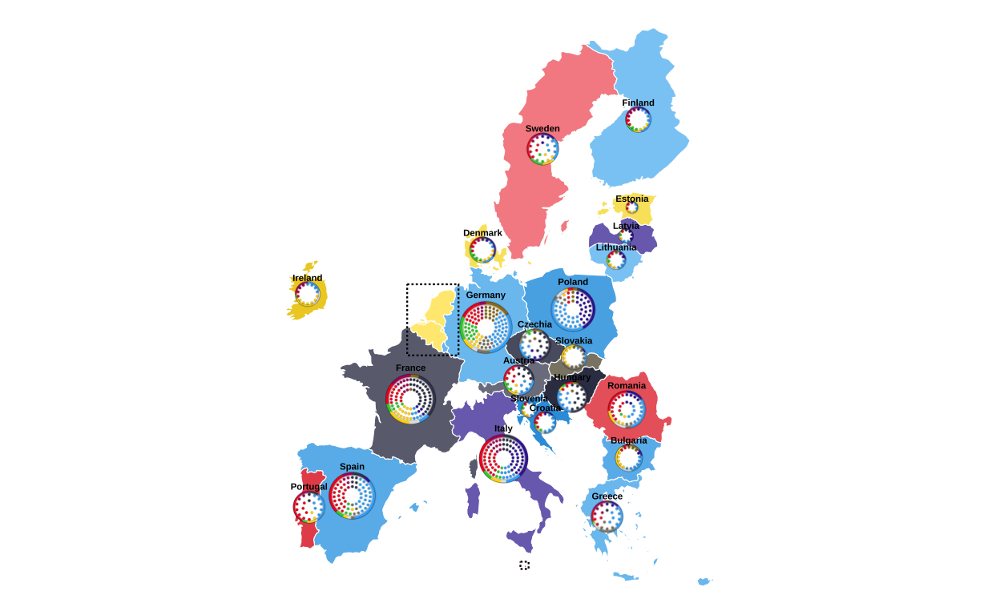
The final map with all of the correctly-placed circular plots was then saved in .png format.
# saving the final map with circular plots
ggsave(
filename = "final_EUROMAP.png",
plot = final_EUROMAP,
width = 22.5,
height = 30,
units = "cm",
dpi = 300,
bg = "white"
)All in all, this was a very involved stage of the replication process that required a lot of research, hours of trial and error, and many failed attempts.
MAKING THE LEGEND
Now that the main map is created it was time to start constructing the other elements of the original plot. First, the legend in the upper-left corner of the original visualisation was created.
In order to create the colour scales that are shown in the legend, the colour mixing formulas from the map creation were used again.
# reusing the colour mixing formulas to create the legend's colour scales
mix_colors <- function(col1, col2, p = 0.5) {
c1 <- col2rgb(col1) / 255
c2 <- col2rgb(col2) / 255
mix <- (1 - p) * c1 + p * c2
grDevices::rgb(mix[1, ], mix[2, ], mix[3, ])
}
darken_color <- function(col, p = 0.25) {
col_rgb <- col2rgb(col) / 255
dark_rgb <- col_rgb * (1 - p)
grDevices::rgb(dark_rgb[1, ], dark_rgb[2, ], dark_rgb[3, ])
}Next, the data required to make the legend was reconstructed and manipulated:
parties <- data.frame(
party = c("EPP", "S&D", "Patriots", "Renew", "ECR", "Greens/EFA", "The Left", "ESN", "NI"),
label = c("Group of the European People's Party (Christian Democrats)",
"Group of the Progressive Alliance of Socialists and Democrats",
"Patriots for Europe Group",
"Renew Europe Group",
"European Conservatives and Reformists Group",
"Group of the Greens/European Free Alliance",
"The Left group in the European Parliament - GUE/NGL",
"Europe of Sovereign Nations Group",
"Non-attached Members"),
vote = c(23.5, 17.4, 10.5, 10.1, 9.9, 8.1, 7.8, 4.5, 4.3),
seats = c(188, 136, 84, 77, 78, 53, 46, 25, 33),
stringsAsFactors = FALSE
) |>
# reversing the order
mutate(
row = rev(row_number()),
# creating the colour key
col_key = dplyr::recode(
party,
"EPP" = "EPP",
"S&D" = "SD",
"Patriots" = "Patriots",
"Renew" = "Renew",
"ECR" = "ECR",
"Greens/EFA" = "GREENSEFA",
"The Left" = "Theleft",
"ESN" = "ESN",
"NI" = "NI"
),
# assigning the colours from the globally designed colour vector
col = custom_cols[col_key]
)
# creating percentages categories
percentages <- tibble(
percentages_idx = 1:7,
percentages_lab = c("-25","25","30","35","40","45","50+")
)
# combining all parties with percentages
percentages_blocks <- expand_grid(parties, percentages)
# identifiying the parties that get a scale bar
parties_with_scale <- c("EPP","S&D","Patriots","Renew","ECR","NI")
# splitting the parties in to groups of scale bar/ no scale bar
parties_scale <- parties |> filter(party %in% parties_with_scale)
parties_noscale <- parties |> filter(!party %in% parties_with_scale)
# creating percentage blocks
scale_blocks <- expand_grid(parties_scale, percentages)Following this, the colour gradients for the parties with scale bars are applied to the scale bar segments.
# generating colour palettes for each party
legend_palettes <- parties_scale |>
rowwise() |>
mutate(
# getting the base colour
base_col = col,
# creating thie light shade
light_col = mix_colors("#FFFFFF", base_col, p = 0.5),
# creating the dark shade
dark_col = darken_color(base_col, p = 0.1),
# creating a 7 colour gradient
pal = list(grDevices::colorRampPalette(c(light_col, dark_col))(7))
) |>
# keeping only the needed columns
ungroup() |>
select(party, pal) |>
# expanding palettes into individual colours (i.e. multiple rows from one row)
tidyr::unnest_longer(pal, indices_to = "percentages_idx", values_to = "scale_col") |>
# converting to integer type for joining
mutate(
percentages_idx = as.integer(percentages_idx)
)
# attaching the shaded colours to each scale-bar tile
scale_blocks_shaded <- scale_blocks |>
left_join(legend_palettes, by = c("party", "percentages_idx"))Finally, it is time to create the visual plot of the legend.
# crearing the visual plot of the legend
legend_plot <- ggplot() +
# creating the main bar for parties with a scale bar
geom_rect(
data = parties_scale,
aes(xmin = 0.5, xmax = 7.5,
ymin = row - 0.45, ymax = row + 0.25,
fill = col)
) +
# creating the main bar for parties with no scale bar
geom_rect(
data = parties_noscale,
aes(xmin = 0.5, xmax = 7.5,
ymin = row - 0.45, ymax = row + 0.25,
fill = col)
) +
# creating the shaded scale bar
geom_rect(
data = scale_blocks_shaded,
aes(xmin = percentages_idx - 0.5, xmax = percentages_idx + 0.5,
ymin = row + 0.25, ymax = row + 0.45,
fill = scale_col),
colour = "white", linewidth = 0.35
) +
# creating the grid lines only in the scale bar area
geom_rect(
data = percentages_blocks |> filter(party %in% parties_with_scale),
aes(xmin = percentages_idx - 0.5, xmax = percentages_idx + 0.5,
ymin = row + 0.25, ymax = row + 0.45),
fill = NA, colour = "white", linewidth = 0.35
) +
# adding the group names in the correct colours
geom_text(
data = parties,
aes(x = 0.7, y = row - 0.02, label = party,
colour = ifelse(party == "Renew", "black", "white")),
fontface = "bold", hjust = 0, size = 5
) +
# adding the subtitles in the correct colours
geom_text(
data = parties,
aes(x = 0.7, y = row - 0.28, label = label,
colour = ifelse(party == "Renew", "black", "white")),
hjust = 0, size = 2, fontface = "italic"
) +
# adding the percentage headers aligned over scale-bar chunks
geom_text(
data = percentages,
aes(x = percentages_idx, y = max(parties$row) + 0.6, label = percentages_lab),
fontface = "bold", size = 3.3
) +
# adding the headers for Vote % and Seats to the right hand side
annotate("text", x = 8.8, y = max(parties$row) + 0.8,
label = "Vote %", fontface = "bold", size = 4) +
annotate("text", x = 11, y = max(parties$row) + 0.8,
label = "Seats", fontface = "bold", size = 4) +
# adding the Vote % and Seats data
geom_text(
data = parties,
aes(x = 8.8, y = row,
label = sprintf("%.1f", vote),
colour = ifelse(party == "Renew", "black", col)),
fontface = "bold", size = 5, hjust = 0.5
) +
geom_text(
data = parties,
aes(x = 11, y = row,
label = seats,
colour = ifelse(party == "Renew", "black", col)),
fontface = "bold", size = 5, hjust = 0.5
) +
# applying the styling and coordinate settings to finalise the visualisation
scale_fill_identity() +
scale_colour_identity() +
coord_cartesian(
xlim = c(0, 11),
ylim = c(0.5, max(parties$row) + 1.6),
clip = "off"
) +
theme_void() +
theme(
plot.margin = margin(5, 40, 5, 5)
)
legend_plot
# saving the legend with the correct proportions to a .png file
ggsave(
"legend_check.png",
legend_plot,
width = 12,
height = 15,
units = "cm",
dpi = 500,
bg = "white"
)
legend_plot
Overall making this legend was much more time consuming and difficult than originally anticipated.
MAKING THE CIRCULAR LEGEND
Next, the donut legend was created. This tells the viewer that the donuts of the combined plots depict the percentage of the total vote recieved by each European Parliament Group, and that the parliament plot refers to the absolute number of seats won by each of these groups. This small piece of the project was perhaps one of the most unexpectedly dufficult to recreate - mainly owing to the fact that it required placing curved arrows on top of a plot with a polar coordinate system.
df <- data.frame(
party = names(custom_cols),
value = 1
)
party_order <- party_order[party_order %in% df$party]
df$party <- factor(df$party, levels = rev(party_order))
circle_path <- function(radius, total) {
data.frame(
x = radius,
y = seq(0, total, length.out = 400)
)
}
total_angle <- sum(df$value)
outer_radius <- 2.5
inner_radius <- 1.2
outer_circle <- circle_path(outer_radius, total_angle)
inner_circle <- circle_path(inner_radius, total_angle)
# defining the central disk radius
center_radius <- 0.5
x_center <- center_radius / 2
width_center <- center_radius
# defining the inner-circle outline (for the central disk)
inner_circle_outline <- circle_path(center_radius, total_angle)
# making a quadratic Bezier helper function: allows us to make a curved path in top of the polar coordinates
make_curve <- function(x0, y0, x1, y1, xc, yc, n = 100) {
t <- seq(0, 1, length.out = n)
x <- (1 - t)^2 * x0 + 2 * (1 - t) * t * xc + t^2 * x1
y <- (1 - t)^2 * y0 + 2 * (1 - t) * t * yc + t^2 * y1
data.frame(x = x, y = y)
}
arrow_tail_radius <- 4.5 # outside donut (outer_radius = 2.5)
#arrow_tail_radius_2 <- 3 # for seats arroe
# making the first curved arrow (bottom of donut) ---------------------------------
arrow_df <- make_curve(
x0 = arrow_tail_radius, # start radius (outside donut)
y0 = total_angle * 0.40, # start angle
x1 = x_center + 0.01, # end radius (just at the centre disk)
y1 = total_angle * 0.35, # end angle
xc = 2.5, # control radius (controls bend)
yc = total_angle * 0.38 # control angle
)
# making the second curved arrow (pointing to top of donut)
arrow_df_top <- make_curve(
x0 = arrow_tail_radius, # tail outside donut
y0 = total_angle * 0.07, # start angle near top
x1 = outer_radius + -0.5, # end just at outer edge of donut
y1 = total_angle * 0, # angle around top; tweak if needed
xc = 2.2, # control radius (further out for a nice bend)
yc = total_angle * 0.07 # control angle slightly "above" to arc over
)
# putting points at the arrow heads (i.e. at the last row of each path)
tail1 <- arrow_df[1, ]
tail2 <- arrow_df_top[1, ]
donut_key <-
ggplot(df, aes(x = 2, y = value, fill = party)) +
geom_col(width = 1, colour = NA) +
geom_col(
data = df,
aes(x = x_center, y = value),
inherit.aes = FALSE,
width = width_center,
fill = "#b3e5e5",
colour = NA
) +
geom_path(data = outer_circle,
aes(x = x, y = y),
inherit.aes = FALSE,
colour = "black",
linewidth = 1.5) +
geom_path(data = inner_circle,
aes(x = x, y = y),
inherit.aes = FALSE,
colour = "black",
linewidth = 1.5) +
geom_path(data = inner_circle_outline,
aes(x = x, y = y),
inherit.aes = FALSE,
colour = "black",
linewidth = 0.8) +
geom_path(
data = arrow_df,
aes(x = x, y = y),
inherit.aes = FALSE,
arrow = arrow(length = unit(1, "mm"), type = "closed"),
linewidth = 1
) +
geom_path(
data = arrow_df_top,
aes(x = x, y = y),
inherit.aes = FALSE,
arrow = arrow(length = unit(1, "mm"), type = "closed"),
linewidth = 1
) +
# putting the labels on the arrows
geom_text(
data = tail1,
aes(x = x + 0.25, y = y + 0.35, label = "Seats"),
inherit.aes = FALSE,
size = 5,
hjust = 0,
fontface = "italic"
) +
geom_text(
data = tail2,
aes(x = x + 0.4, y = y + -0.38, label = "Vote %"),
inherit.aes = FALSE,
size = 5,
hjust = 0,
fontface = "italic"
) +
coord_polar(theta = "y") +
scale_fill_manual(values = custom_cols) +
xlim(0, arrow_tail_radius + 1) +
theme_void() +
theme(legend.position = "none")
donut_key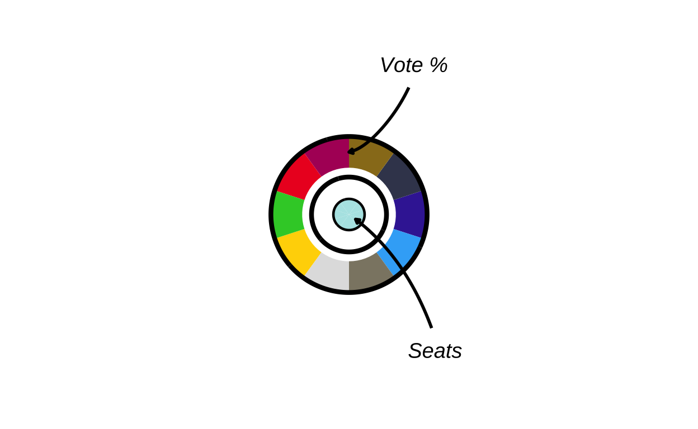
# saving the donut key as a .png file
ggsave(
"donut_key.png",
donut_key,
width = 12,
height = 12 ,
units = "cm",
dpi = 500,
bg = "transparent"
)MAKING THE ZOOM IN MAP SECTION
Last but not least, the zoomed in map sections present in the upper-right corner of the original plot had to be recreated. Initially, the map portion of the three geographical areas represented in the zoom areas were individually created, then they were recreated with the appropriate circle plots overlaid on top.
Step by step, for each final zoomed in area the process included:
- sizing the circular plots based on population
- finding where to place them (country centroids)
- saving the circles as .png files
- creating a zoomed map of the relevant region
- overlaying the circular plots at each country’s location
- adding country name labels above each circle
DATA CREATION
Before the zoom maps were made, the population data for these regions had to be added to the environment.
benelux_populations <- data.frame(
country = c("Belgium", "Netherlands", "Luxembourg"),
country_code = c("be", "nl", "lu"),
population = c(11800000, 18000000, 700000)
)malta_populations <- data.frame(
country = c("Malta"),
country_code = c("mt"),
population = c(600000)
)cyprus_populations <- data.frame(
country = c("Cyprus"),
country_code = c("cy"),
population = c(1400000)
)BENELUX REGION
# making the map of the Benelux zoom box
# filtering only the relevant countries
benelux <- final_map |>
dplyr::filter(country %in% c("Belgium", "Netherlands", "Luxembourg"))
# getting the bounding box (minimum square coordinates) of the countries
bb_ben <- sf::st_bbox(benelux)
# adding padding for aesthetics
xpad_ben <- (bb_ben["xmax"] - bb_ben["xmin"]) * 0.15
ypad_ben <- (bb_ben["ymax"] - bb_ben["ymin"]) * 0.15
# creating the zoomed map
zoom_benelux <-
ggplot() +
geom_sf(
data = final_map,
aes(fill = party_band),
colour = "white",
linewidth = 0.2
) +
scale_fill_manual(values = fill_values, na.value = "grey90", guide = "none") +
# cropping the view to just the Benelux area
coord_sf(
xlim = c(bb_ben["xmin"] - xpad_ben, bb_ben["xmax"] + xpad_ben),
ylim = c(bb_ben["ymin"] - ypad_ben, bb_ben["ymax"] + ypad_ben),
expand = FALSE
) +
theme_void()
zoom_benelux
Once this was created correctly, the map section was created again, this time with the relevant circular plots overlaid.
# creating the final map of the Benelux zoom box
# calculating the plot sizes based on populaitons
benelux_sizes <- benelux_populations |>
mutate(
log_pop = log10(population),
plot_size = rescale(
log_pop,
to = c(3, 6),
from = c(log10(min(population)), log10(max(population)))
)
)
# calculating the centroids for the Benelux countries (same process as before)
benelux_sf <- final_map |>
filter(country %in% benelux_populations$country) |>
group_by(country) |>
summarise(
geometry = st_union(geometry),
.groups = "drop"
) |>
st_as_sf()
centroids <- st_centroid(benelux_sf)
coords <- st_coordinates(centroids)
benelux_centroids <- benelux_sf |>
st_drop_geometry() |>
mutate(
centroid_x = coords[, "X"],
centroid_y = coords[, "Y"]
)
# combining the centroid positions with plot sizes
benelux_data <- benelux_centroids |>
left_join(benelux_sizes, by = "country")
# saving the country plots as .png images (also like befoere)
output_dir <- "benelux_plots"
dir.create(output_dir, showWarnings = FALSE)
benelux_data$image_path <- NA_character_
for (i in seq_len(nrow(benelux_data))) {
country_name <- benelux_data$country[i]
country_code <- benelux_data$country_code[i]
plot_size <- benelux_data$plot_size[i]
# expecting be_final, nl_final, lu_final
plot_name <- paste0(country_code, "_final")
existing_plot <- get(plot_name)
img_file <- file.path(output_dir, paste0(country_name, ".png"))
# saving the sized plots
ggsave(
filename = img_file,
plot = existing_plot,
width = plot_size,
height = plot_size,
dpi = 300,
bg = "transparent"
)
benelux_data$image_path[i] <- img_file
}
# using overall map height to convert relative sizes
bbox <- st_bbox(final_map)
y_range <- as.numeric(bbox["ymax"] - bbox["ymin"])
benelux_data <- benelux_data |>
mutate(
geom_size = plot_size * 0.05,
img_height_data = geom_size * y_range,
radius = img_height_data / 2,
adj_x = centroid_x,
adj_y = centroid_y,
# positioning the name labels just above the circles
label_y = adj_y + 0.14 * radius
)
# recreating the Benelux zoom base map
benelux_poly <- final_map |>
filter(country %in% c("Belgium", "Netherlands", "Luxembourg"))
bb_ben <- st_bbox(benelux)
xpad_ben <- (bb_ben["xmax"] - bb_ben["xmin"]) * 0.15
ypad_ben <- (bb_ben["ymax"] - bb_ben["ymin"]) * 0.15
zoom_benelux <-
ggplot() +
geom_sf(
data = final_map,
aes(fill = party_band),
colour = "white",
linewidth = 0.2
) +
scale_fill_manual(values = fill_values, na.value = "grey90", guide = "none") +
coord_sf(
xlim = c(bb_ben["xmin"] - xpad_ben, bb_ben["xmax"] + xpad_ben),
ylim = c(bb_ben["ymin"] - ypad_ben, bb_ben["ymax"] + ypad_ben),
expand = FALSE
) +
theme_void()
# adding the circular plots on top of the map
zoom_benelux_with_circles <-
zoom_benelux +
geom_image(
data = benelux_data,
aes(
x = adj_x,
y = adj_y,
image = image_path,
size = I(geom_size)
),
asp = 1
) +
geom_text(
data = benelux_data,
aes(
x = adj_x,
y = label_y,
label = country
),
fontface = "bold",
size = 1.5
)
zoom_benelux_with_circles
The same process was then recreated for the creation of the Malta and Cyprus zoomed map sections.
MALTA
malta_data <- final_map |>
dplyr::filter(country == "Malta")
bb_mt <- sf::st_bbox(malta_data)
xpad_mt <- (bb_mt["xmax"] - bb_mt["xmin"]) * 1.2
ypad_mt <- (bb_mt["ymax"] - bb_mt["ymin"]) * 1.2
zoom_malta <-
ggplot() +
geom_sf(
data = malta_data,
aes(fill = party_band),
colour = "white",
linewidth = 0.2
) +
scale_fill_manual(values = fill_values, na.value = "grey90", guide = "none") +
coord_sf(
xlim = c(bb_mt["xmin"] - xpad_mt, bb_mt["xmax"] + xpad_mt),
ylim = c(bb_mt["ymin"] - ypad_mt, bb_mt["ymax"] + ypad_mt),
expand = FALSE
) +
theme_void()
zoom_maltawith combo plots
malta_sizes <- malta_populations |>
mutate(
log_pop = log10(population),
plot_size = rescale(
log_pop,
to = c(10),
from = c(log10(min(population)), log10(max(population)))
)
)
# centroids
malta_sf <- final_map |>
filter(country %in% malta_populations$country) |>
group_by(country) |>
summarise(
geometry = st_union(geometry),
.groups = "drop"
) |>
st_as_sf()
centroids <- st_centroid(malta_sf)
coords <- st_coordinates(centroids)
malta_centroids <- malta_sf |>
st_drop_geometry() |>
mutate(
centroid_x = coords[, "X"],
centroid_y = coords[, "Y"]
)
# joining population and size info
malta_data <- malta_centroids |>
left_join(malta_sizes, by = "country")
# saving circles as .png
output_dir <- "malta_plots"
dir.create(output_dir, showWarnings = FALSE)
malta_data$image_path <- NA_character_
for (i in seq_len(nrow(malta_data))) {
country_name <- malta_data$country[i]
country_code <- malta_data$country_code[i]
plot_size <- malta_data$plot_size[i]
# expecting be_final, nl_final, lu_final
plot_name <- paste0(country_code, "_final")
existing_plot <- get(plot_name)
img_file <- file.path(output_dir, paste0(country_name, ".png"))
ggsave(
filename = img_file,
plot = existing_plot,
width = plot_size,
height = plot_size,
dpi = 300,
bg = "transparent"
)
malta_data$image_path[i] <- img_file
}
# converting to relative sizes
bbox <- st_bbox(final_map)
y_range <- as.numeric(bbox["ymax"] - bbox["ymin"])
malta_data <- malta_data |>
mutate(
geom_size = plot_size * 0.05,
img_height_data = geom_size * y_range,
radius = img_height_data / 2,
adj_x = centroid_x,
adj_y = centroid_y,
# positioning the label
label_y = adj_y + 0.008 * radius
)
# recreating the malta base map
malta_poly <- final_map |>
filter(country %in% c("Malta"))
bb_mt <- st_bbox(malta_poly)
xpad_mt <- (bb_mt["xmax"] - bb_mt["xmin"]) * 0.15
ypad_mt <- (bb_mt["ymax"] - bb_mt["ymin"]) * 0.15
zoom_malta <-
ggplot() +
geom_sf(
data = final_map,
aes(fill = party_band),
colour = "white",
linewidth = 0.2
) +
scale_fill_manual(values = fill_values, na.value = "grey90", guide = "none") +
coord_sf(
xlim = c(bb_mt["xmin"] - xpad_mt, bb_mt["xmax"] + xpad_mt),
ylim = c(bb_mt["ymin"] - ypad_mt, bb_mt["ymax"] + ypad_mt),
expand = FALSE
) +
theme_void()
# adding the circular plots on top
zoom_malta_with_circles <-
zoom_malta +
geom_image(
data = malta_data,
aes(
x = adj_x,
y = adj_y,
image = image_path,
size = I(geom_size)
),
asp = 1
) +
geom_text(
data = malta_data,
aes(
x = adj_x,
y = label_y,
label = country
),
fontface = "bold",
size = 1.5
)
zoom_malta_with_circles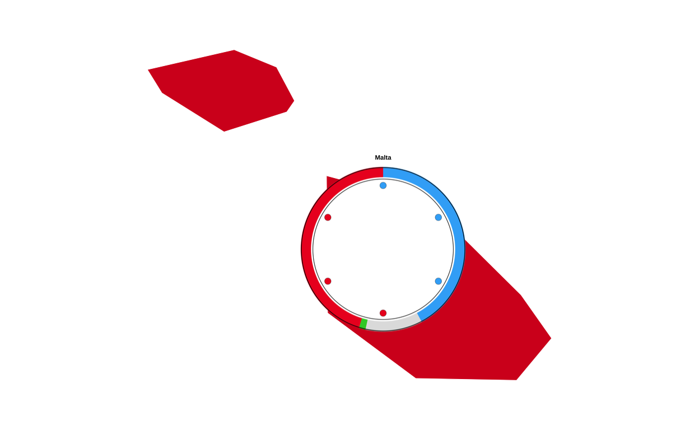
CYPRUS
cyprus_data <- final_map |>
dplyr::filter(country == "Cyprus")
bb_cy <- sf::st_bbox(cyprus_data)
xpad_cy <- (bb_cy["xmax"] - bb_cy["xmin"]) * 0.6
ypad_cy <- (bb_cy["ymax"] - bb_cy["ymin"]) * 0.6
zoom_cyprus <-
ggplot() +
geom_sf(
data = cyprus_data,
aes(fill = party_band),
colour = "white",
linewidth = 0.2
) +
scale_fill_manual(values = fill_values, na.value = "grey90", guide = "none") +
coord_sf(
xlim = c(bb_cy["xmin"] - xpad_cy, bb_cy["xmax"] + xpad_cy),
ylim = c(bb_cy["ymin"] - ypad_cy, bb_cy["ymax"] + ypad_cy),
expand = FALSE
) +
theme_void()
zoom_cyprus
with combo plots…
cyprus_sizes <- cyprus_populations |>
mutate(
log_pop = log10(population),
plot_size = rescale(
log_pop,
to = c(13),
from = c(log10(min(population)), log10(max(population)))
)
)
# centroids for cyprus
cyprus_sf <- final_map |>
filter(country %in% cyprus_populations$country) |>
group_by(country) |>
summarise(
geometry = st_union(geometry),
.groups = "drop"
) |>
st_as_sf()
centroids <- st_centroid(cyprus_sf)
coords <- st_coordinates(centroids)
cyprus_centroids <- cyprus_sf |>
st_drop_geometry() |>
mutate(
centroid_x = coords[, "X"],
centroid_y = coords[, "Y"]
)
# joining population and size info
cyprus_data <- cyprus_centroids |>
left_join(cyprus_sizes, by = "country")
# saving circular plots in .png format
output_dir <- "cyprus_plots"
dir.create(output_dir, showWarnings = FALSE)
cyprus_data$image_path <- NA_character_
for (i in seq_len(nrow(cyprus_data))) {
country_name <- cyprus_data$country[i]
country_code <- cyprus_data$country_code[i]
plot_size <- cyprus_data$plot_size[i]
# expects: be_final, nl_final, lu_final
plot_name <- paste0(country_code, "_final")
existing_plot <- get(plot_name)
img_file <- file.path(output_dir, paste0(country_name, ".png"))
ggsave(
filename = img_file,
plot = existing_plot,
width = plot_size,
height = plot_size,
dpi = 300,
bg = "transparent"
)
cyprus_data$image_path[i] <- img_file
}
# We use overall map height to convert relative sizes
bbox <- st_bbox(final_map)
y_range <- as.numeric(bbox["ymax"] - bbox["ymin"])
cyprus_data <- cyprus_data |>
mutate(
geom_size = plot_size * 0.05,
img_height_data = geom_size * y_range,
radius = img_height_data / 2,
adj_x = centroid_x,
adj_y = centroid_y,
# positioning the label
label_y = adj_y + 0.023 * radius
)
# recreating cyprus zoom base map
cyprus_poly <- final_map |>
filter(country %in% c("Cyprus"))
bb_cy <- st_bbox(cyprus_poly)
xpad_cy <- (bb_cy["xmax"] - bb_cy["xmin"]) * 0.15
ypad_cy <- (bb_cy["ymax"] - bb_cy["ymin"]) * 0.15
zoom_cyprus <-
ggplot() +
geom_sf(
data = final_map,
aes(fill = party_band),
colour = "white",
linewidth = 0.2
) +
scale_fill_manual(values = fill_values, na.value = "grey90", guide = "none") +
coord_sf(
xlim = c(bb_cy["xmin"] - xpad_cy, bb_cy["xmax"] + xpad_cy),
ylim = c(bb_cy["ymin"] - ypad_cy, bb_cy["ymax"] + ypad_cy),
expand = FALSE
) +
theme_void()
# adding the circular plots on top of the map
zoom_cyprus_with_circles <-
zoom_cyprus +
geom_image(
data = cyprus_data,
aes(
x = adj_x,
y = adj_y,
image = image_path,
size = I(geom_size)
),
asp = 1
) +
geom_text(
data = cyprus_data,
aes(
x = adj_x,
y = label_y,
label = country
),
fontface = "bold",
size = 1.5
)
zoom_cyprus_with_circles
PUTTING IT ALL TOGETHER
At this stage all of the component parts of the original visualisation had been made so it was time to put them all together to create the final image. To combine multiple ggplot2 plots into a figure there are multiple different strategies - the two packages that were most seriously considered in this project were “cowplot” and “patchwork”. Cowplot appeared to be more function based, whereas patchwork seemed to take a simpler approach to plot layouts. After some experimentation, it was decided that using the “patchwork” package gave the “easiest to follow” path from component parts to final plot, specifically utilising its inset_element() function to overlay the insets on the main background map.
The first inset to be positioned on the main map was the legend
# reading the saved legend image
leg_img <- png::readPNG("legend_check.png")
# concerting the image to a grob
leg_grob <- grid::rasterGrob(leg_img, interpolate = TRUE)
# wrapping the png in a ggplot so patchwork can inset it
legend_png_plot <- ggplot() +
annotation_custom(leg_grob, xmin = -Inf, xmax = Inf, ymin = -Inf, ymax = Inf) +
coord_cartesian(expand = FALSE) +
theme_void() +
theme(
plot.margin = margin(0, 0, 0, 0),
panel.spacing = unit(0, "pt")
)
# defining the inset position (0–1, relative to the full canvas)
left <- 0.0
right <- 0.34
top <- 0.98
bottom <- 0.66
# adding the legend to the main map (full canvas, not just plot area)
final_plot <- final_EUROMAP +
inset_element(
legend_png_plot,
left = left,
bottom = bottom,
right = right,
top = top,
align_to = "full"
)
final_plot
# saving thhe progress
ggsave(
"EUROMAP_with_legend.png",
final_plot,
width = 22.5,
height = 30,
units = "cm",
dpi = 300,
bg = "white"
)Following this, the donut key was added to the main plot by slotting it into the above chunk of code. This was done by defining its position relative to the legend key that has already been positioned.
# reading the saved legend image
leg_img <- png::readPNG("legend_check.png")
# converting it to a grob
leg_grob <- grid::rasterGrob(leg_img, interpolate = TRUE)
# wrapping the png in a ggplot so patchwork can inset it
legend_png_plot <- ggplot() +
annotation_custom(leg_grob, xmin = -Inf, xmax = Inf, ymin = -Inf, ymax = Inf) +
coord_cartesian(expand = FALSE) +
theme_void() +
theme(plot.margin = margin(0, 0, 0, 0))
# reading the saved donut key image
don_img <- png::readPNG("donut_key.png")
# converting it to a grob
don_grob <- grid::rasterGrob(don_img, interpolate = TRUE)
# wrapping the png in a ggplot so patchwork can inset it
donut_png_plot <- ggplot() +
annotation_custom(don_grob, xmin = -Inf, xmax = Inf, ymin = -Inf, ymax = Inf) +
coord_cartesian(expand = FALSE) +
theme_void() +
theme(plot.margin = margin(0, 0, 0, 0))
# legend inset positioning again
leg_left <- 0.00
leg_right <- 0.34
leg_top <- 0.98
leg_bottom <- 0.66
# placing the donut key to the right of the legend by defining a horisontal gap between the two
gap <- -0.05
don_size <- 0.2
don_left <- leg_right + gap
don_right <- don_left + don_size
don_top <- leg_top - 0.06
don_bottom <- don_top - don_size #
# adding the legend and the key to the main map (full canvas, not just plot area)
final_plot <- final_EUROMAP +
# adding the legend
inset_element(
legend_png_plot,
left = leg_left,
right = leg_right,
top = leg_top,
bottom = leg_bottom,
align_to = "full"
) +
# adding the donut key
inset_element(
donut_png_plot,
left = don_left,
right = don_right,
top = don_top,
bottom = don_bottom,
align_to = "full"
)
final_plot
# saving the progress
ggsave(
"EUROMAP_with_legend_key.png",
final_plot,
width = 22.5,
height = 30,
units = "cm",
dpi = 300,
bg = "white"
)COMBINING THE ZOOMS
To inset the three zoomed in map sections, they were first joined together so that only one inset on the main map had to be done. Patchwork was again used to do this, and custom styling was applied.
# removing the spacinf between panels, the borderm and the margin around the plot
panel_strip <- theme(
panel.spacing = unit(0, "pt"),
panel.border = element_blank(),
plot.margin = margin(0, 0, 0, 0)
)
# adding the black border
panel_border <- theme(
panel.border = element_rect(color = "black", fill = NA, linewidth = 0.8),
plot.background = element_blank(),
plot.margin = margin(0, 0, 0, 0)
)
# combining the zoomed map sections using patchwork operators
combo_zooms <-
(zoom_benelux_with_circles + panel_strip + panel_border) /
((zoom_malta_with_circles + panel_strip + panel_border) |
(zoom_cyprus_with_circles + panel_strip + panel_border)) +
plot_layout(heights = c(5.1, 1))
combo_zooms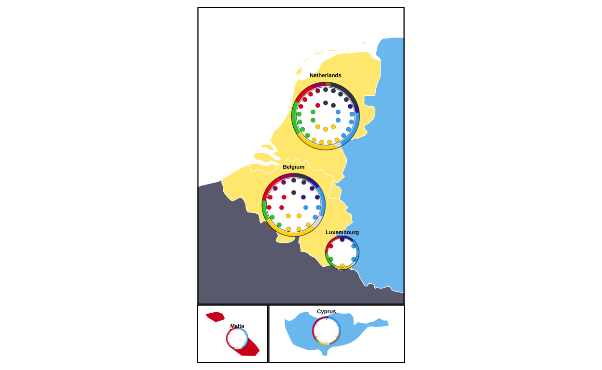
now the combination plot is saved as a .png file and trimmed tightly to the boundaries of the plot
# saving the combination zoom plot in .png format
ggsave(
"zooms.png",
combo_zooms,
width = 10,
height = 6,
units = "cm",
dpi = 300,
bg = "white"
)
# using the "magick" package to trim the excess white space around the saved plot (load, trim, save trimmed)
img <- image_read("zooms.png")
img_trim <- image_trim(img, fuzz = 10)
image_write(img_trim, "zooms_trimmed.png", format = "png")At last, the trimmed zoom plots image is overlaid on the top-right-hand corner of the main map
# loading the image file and converting it to a grob
zooms_grob <- rasterGrob(readPNG("zooms_trimmed.png"), interpolate = TRUE)
# wrapping the image so it can be used by patchwork
zooms_panel <- wrap_elements(full = zooms_grob) +
theme_void() # keeps it as “just the image”
# positioning the zooms plot on the main map
final_fig <-
final_plot +
inset_element(
zooms_panel,
left = 0.78,
bottom = 0.62,
right = 1.30,
top = 0.98,
align_to = "plot"
)
final_fig
# saving the final image
ggsave(
"EU_FINAL.png",
final_fig,
width = 40,
height = 30,
units = "cm",
dpi = 300,
bg = "white"
)FINAL REPRODUCTION
Here the final reproduction is presented at the correct scale
knitr::include_graphics("EU_FINAL.png")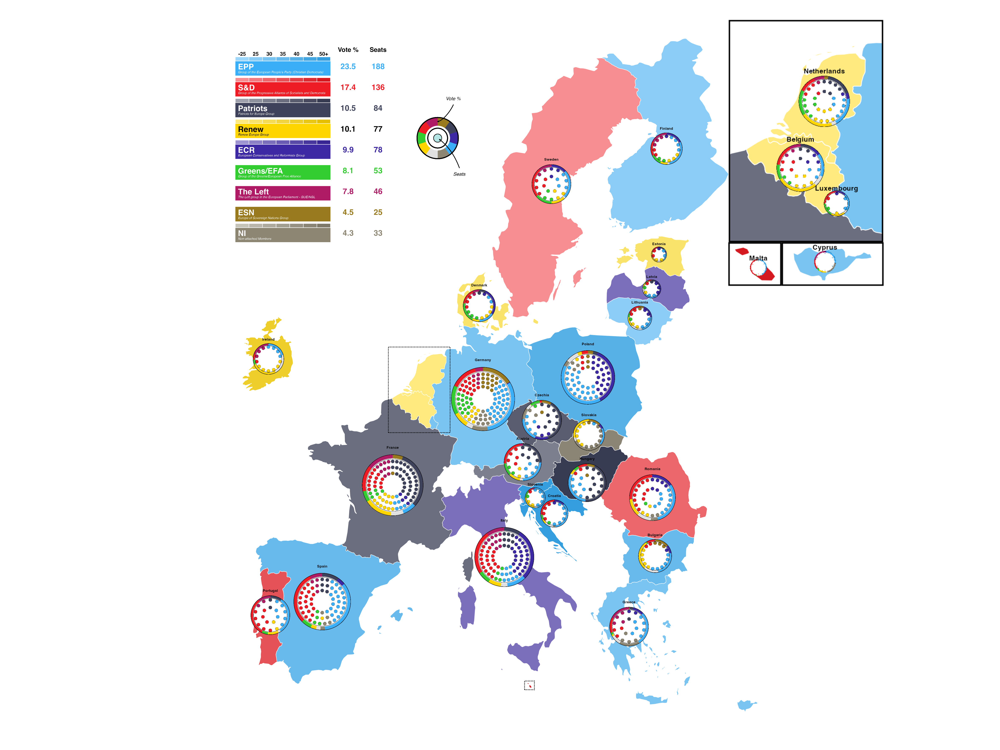
REIMAGINING THE VISUALISATION
In this stage of the project, the goal is to reimagine and improve on the original plot.
ISSUES WITH THE ORIGINAL PLOT
The original plot is undeniably eye catching, however it has some issues mainly relating do readability. Firstly, the donut plots include small segments of vote that are entirely invisible at the scale the plots are drawn at. Secondly, the colours used in the plot in the way that they are used make the plot sometimes very difficult to interpret. For example, a dark blue and a dark grey seat point next to each other on a smaller-sized circular plot are very hard to distinguish from one another quickly. Thirdly, the plot lacks any sort of heading or contextualisation and this, combined with the sheer number of different types of election data and plot formats that are combined in the final image, makes it very difficult to understand and interpret the plot quickly or quicker than the viewer could learn the same information from a textual source. This ease and speed of conveying information is one of teh main reason that visualisations are used however any advantages to the graphic approach are lost in the overcomplexity of the original graph. All in all, these problems can be summed up as - the original plot is trying to do too many things at once.
In order to remedy this, it was decided to split the information being conveyed in the original plot into three(???) individual plots, each using a technique specific to the type of information being conveyed.
STRECHING OUT THE DONUT DATA
The data in the donuts of the original plot represents the percentage of the overall vote won by each European Parliament Group in the 2024 election. In other less specific words, this data represents parts of a whole, therefore it was chosen to use stacked bar charts in order to re-imagine this part of the visualisation.
The data in the original donut plots came from 27 individually defined data sets, one for each country in the plot. In order to be able to handle the data better for making a series of stacked bar plots, these datasets were all combined in to one larger dataframe.
all_countries <- bind_rows(
don_at |> mutate(country = "Austria"),
don_be |> mutate(country = "Belgium"),
don_bg |> mutate(country = "Bulgaria"),
don_hr |> mutate(country = "Croatia"),
don_cy |> mutate(country = "Cyprus"),
don_cz |> mutate(country = "Czechia"),
don_dk |> mutate(country = "Denmark"),
don_ee |> mutate(country = "Estonia"),
don_fi |> mutate(country = "Finland"),
don_fr |> mutate(country = "France"),
don_de |> mutate(country = "Germany"),
don_el |> mutate(country = "Greece"),
don_hu |> mutate(country = "Hungary"),
don_ie |> mutate(country = "Ireland"),
don_it |> mutate(country = "Italy"),
don_lv |> mutate(country = "Latvia"),
don_lt |> mutate(country = "Lithuania"),
don_lu |> mutate(country = "Luxembourg"),
don_mt |> mutate(country = "Malta"),
don_nl |> mutate(country = "Netherlands"),
don_pl |> mutate(country = "Poland"),
don_pt |> mutate(country = "Portugal"),
don_ro |> mutate(country = "Romania"),
don_sk |> mutate(country = "Slovakia"),
don_si |> mutate(country = "Slovenia"),
don_es |> mutate(country = "Spain"),
don_se |> mutate(country = "Sweden")
)Then a new party order was created which places the parliament group with the overall largest proportion of the vote at the bottom, and that with the smallest at the top. This was done for both ease of reading and aesthetic reasons.
bars_party_order <- c("Independent", "NI", "ESN", "Theleft", "GREENSEFA", "Renew", "ECR", "Patriots", "SD", "EPP")Party factor levels were set to match the corrected order
all_countries$party <- factor(all_countries$party, levels = bars_party_order)Then a new plot was created with heavy styling
ggplot(all_countries, aes(x = vote_proportion, y = country, fill = party)) +
geom_bar(stat = "identity", width = 0.75) +
scale_fill_manual(
values = custom_cols,
labels = c(
"Independent" = "Independent",
"NI" = "Non-Inscrits",
"ESN" = "Europe of Sovereign Nations",
"Theleft" = "The Left",
"GREENSEFA" = "Greens/EFA",
"Renew" = "Renew Europe",
"ECR" = "European Conservatives & Reformists",
"Patriots" = "Patriots for Europe",
"SD" = "Socialists & Democrats",
"EPP" = "European People's Party"
)) +
scale_x_continuous(
expand = c(0, 0),
breaks = seq(0, 100, 25),
labels = function(x) paste0(x, "%")
) +
labs(
title = "2024 European Parliament Election Results by Country",
subtitle = "Vote share by political group",
x = "Vote Share",
y = NULL,
fill = "Political Group",
caption = "Source: European Parliament Election Results 2024"
) +
theme_minimal(base_size = 12) +
theme(
# defining the plot background
plot.background = element_rect(fill = "white",
color = NA),
panel.background = element_rect(fill = "white",
color = NA),
panel.grid.major.y = element_blank(),
panel.grid.minor = element_blank(),
panel.grid.major.x = element_line(color = "grey90",
linewidth = 0.5),
# styling the axes
axis.text.y = element_text(size = 10,
color = "grey20"),
axis.text.x = element_text(size = 10,
color = "grey20"),
axis.title.x = element_text(size = 11,
face = "bold",
color = "grey20",
margin = margin(t = 10)),
# styling the title
plot.title = element_text(size = 16,
face = "bold",
color = "grey10",
margin = margin(b = 5)),
plot.subtitle = element_text(size = 12,
color = "grey30",
margin = margin(b = 15)),
plot.caption = element_text(size = 9,
color = "grey50",
hjust = 0,
margin = margin(t = 15)),
# styling the legend
legend.position = "right",
legend.title = element_text(size = 11,
face = "bold",
color = "grey20"),
legend.text = element_text(size = 10,
color = "grey20"),
legend.key.size = unit(0.8, "cm"),
legend.background = element_rect(fill = "white",
color = "grey80",
linewidth = 0.5),
legend.margin = margin(10, 10, 10, 10),
# defining the margins
plot.margin = margin(20, 20, 20, 20)
)# saving the plot
ggsave("eu_election_results_horizontal.png", width = 12,
height = 10,
dpi = 300,
bg = "white")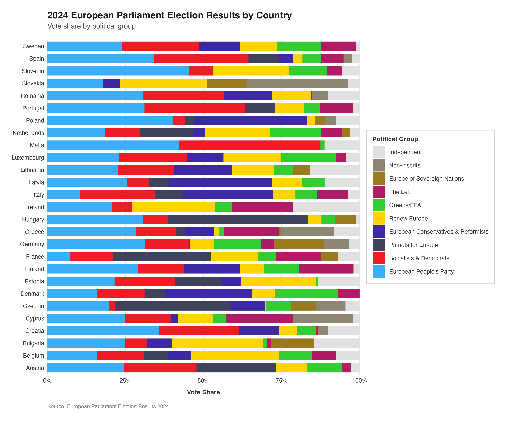
This plot gives a representation of the data that was held in the donut plots of the original visualisation in a format that allows even the smallest proportions of the vote to be recognised by the viewer. The standardisation of the bar length means that, compared to the varying sizes of the donuts in the original plot, the vote breakdown across the coutries can be more easily and accurately compared.
Conveying the raw data is only one facet of using data visualisation techniques in election and parlimentary contexts. Graphical representations can and are often used for “storytelling” with the data, meaning that they are used to give a representation that adds extra context or meaning to the viewer’s understanding of the data. With some relatively small tweaks, the vote proportion stacked bar charts can be represented in more illustrative ways.
One way in which this could be done here is through the use of grouping and faceting in order to present the bars according to regional groupings
# adding regional groupings
all_countries <- all_countries %>%
mutate(region = case_when(
country %in% c("Denmark", "Sweden", "Finland", "Estonia", "Latvia", "Lithuania") ~ "Nordic & Baltic",
country %in% c("Poland", "Czechia", "Slovakia", "Hungary", "Slovenia", "Croatia", "Romania", "Bulgaria") ~ "Eastern Europe",
country %in% c("Germany", "Austria", "Belgium", "Netherlands", "Luxembourg", "Ireland", "France") ~ "Western Europe",
country %in% c("Spain", "Portugal", "Italy", "Greece", "Malta", "Cyprus") ~ "Southern Europe",
TRUE ~ "Other"
))
# setting party factor levels
all_countries$party <- factor(all_countries$party, levels = party_order)
# creating the faceted plot
ggplot(all_countries, aes(x = country,
y = vote_proportion,
fill = party)) +
geom_bar(stat = "identity",
width = 0.8) +
scale_fill_manual(
values = custom_cols,
labels = c(
"Independent" = "Independent",
"NI" = "Non-Inscrits",
"ESN" = "Europe of Sovereign Nations",
"Theleft" = "The Left",
"GREENSEFA" = "Greens/EFA",
"Renew" = "Renew Europe",
"ECR" = "European Conservatives & Reformists",
"Patriots" = "Patriots for Europe",
"SD" = "Socialists & Democrats",
"EPP" = "European People's Party"
)) +
scale_y_continuous(
expand = c(0, 0),
breaks = seq(0, 100, 25),
labels = function(x) paste0(x, "%")
) +
facet_wrap(~ region, scales = "free_x", nrow = 2) +
labs(
title = "2024 European Parliament Election Results by Country",
subtitle = "Vote share by political group and region",
x = NULL,
y = "Vote Share",
fill = "Political Group",
caption = "Source: European Parliament Election Results 2024"
) +
theme_minimal(base_size = 12) +
theme(
# defining the plot background
plot.background = element_rect(fill = "white",
color = NA),
panel.background = element_rect(fill = "white",
color = NA),
panel.grid.major.x = element_blank(),
panel.grid.minor = element_blank(),
panel.grid.major.y = element_line(color = "grey90",
linewidth = 0.5),
# styling the axes
axis.text.x = element_text(angle = 45,
hjust = 1,
vjust = 1,
size = 9,
color = "grey20"),
axis.text.y = element_text(size = 10,
color = "grey20"),
axis.title.y = element_text(size = 11,
face = "bold",
color = "grey20",
margin = margin(r = 10)),
axis.line.x = element_line(color = "grey60",
linewidth = 0.5),
# styling the title
plot.title = element_text(size = 16,
face = "bold",
color = "grey10",
margin = margin(b = 5)),
plot.subtitle = element_text(size = 12,
color = "grey30",
margin = margin(b = 15)),
plot.caption = element_text(size = 9,
color = "grey50",
hjust = 0,
margin = margin(t = 15)),
# styling the facet strip
strip.background = element_rect(fill = "grey95",
color = "grey60",
linewidth = 0.5),
strip.text = element_text(size = 11,
face = "bold",
color = "grey20",
margin = margin(5, 5, 5, 5)),
# styling the legend
legend.position = "right",
legend.title = element_text(size = 11,
face = "bold",
color = "grey20"),
legend.text = element_text(size = 10,
color = "grey20"),
legend.key.size = unit(0.8, "cm"),
legend.background = element_rect(fill = "white",
color = "grey80",
linewidth = 0.5),
legend.margin = margin(10, 10, 10, 10),
# defining the margins
plot.margin = margin(20, 20, 20, 20)
)
# saving the plot
ggsave("eu_election_faceted_region.png", width = 16,
height = 10,
dpi = 300,
bg = "white")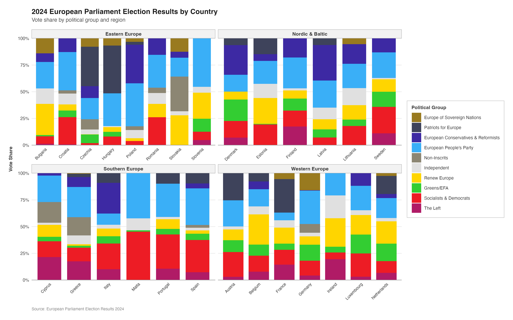
Alternatively, instead of regional groupings, the bars could be arranged by ‘old’ vs ‘new’ EU member states
# grouping according to EU-15 vs post-2004 members
all_countries <- all_countries %>%
mutate(eu_group = case_when(
country %in% c("Belgium", "France", "Germany", "Italy", "Luxembourg", "Netherlands",
"Denmark", "Ireland", "Greece", "Spain", "Portugal",
"Austria", "Finland", "Sweden") ~ "EU-15 (pre-2004)",
TRUE ~ "Post-2004 Members"
))
# setting party factor levels
all_countries$party <- factor(all_countries$party, levels = party_order)
# creating the faceted plot
ggplot(all_countries, aes(x = country, y = vote_proportion, fill = party)) +
geom_bar(stat = "identity", width = 0.8) +
scale_fill_manual(
values = custom_cols,
labels = c(
"Independent" = "Independent",
"NI" = "Non-Inscrits",
"ESN" = "Europe of Sovereign Nations",
"Theleft" = "The Left",
"GREENSEFA" = "Greens/EFA",
"Renew" = "Renew Europe",
"ECR" = "European Conservatives & Reformists",
"Patriots" = "Patriots for Europe",
"SD" = "Socialists & Democrats",
"EPP" = "European People's Party"
)
) +
scale_y_continuous(
expand = c(0, 0),
breaks = seq(0, 100, 25),
labels = function(x) paste0(x, "%")
) +
facet_wrap(~ eu_group, scales = "free_x", nrow = 2) +
labs(
title = "2024 European Parliament Election Results by Country",
subtitle = "Vote share by political group: Comparing old and new EU members",
x = NULL,
y = "Vote Share",
fill = "Political Group",
caption = "Source: European Parliament Election Results 2024"
) +
theme_minimal(base_size = 12) +
theme(
# plotting the background
plot.background = element_rect(fill = "white",
color = NA),
panel.background = element_rect(fill = "white",
color = NA),
panel.grid.major.x = element_blank(),
panel.grid.minor = element_blank(),
panel.grid.major.y = element_line(color = "grey90",
linewidth = 0.5),
# styling the axes
axis.text.x = element_text(angle = 45,
hjust = 1,
vjust = 1,
size = 9,
color = "grey20"),
axis.text.y = element_text(size = 10,
color = "grey20"),
axis.title.y = element_text(size = 11,
face = "bold",
color = "grey20",
margin = margin(r = 10)),
axis.line.x = element_line(color = "grey60",
linewidth = 0.5),
# styling the title
plot.title = element_text(size = 16,
face = "bold",
color = "grey10",
margin = margin(b = 5)),
plot.subtitle = element_text(size = 12,
color = "grey30",
margin = margin(b = 15)),
plot.caption = element_text(size = 9,
color = "grey50",
hjust = 0,
margin = margin(t = 15)),
# styling the facet strip
strip.background = element_rect(fill = "grey95",
color = "grey60",
linewidth = 0.5),
strip.text = element_text(size = 11,
face = "bold",
color = "grey20",
margin = margin(5, 5, 5, 5)),
# styling the legend
legend.position = "right",
legend.title = element_text(size = 11,
face = "bold",
color = "grey20"),
legend.text = element_text(size = 10,
color = "grey20"),
legend.key.size = unit(0.8, "cm"),
legend.background = element_rect(fill = "white",
color = "grey80",
linewidth = 0.5),
legend.margin = margin(10, 10, 10, 10),
# defining the margins
plot.margin = margin(20, 20, 20, 20)
)
# saving the plot
ggsave("eu_election_old_vs_new.png", width = 16,
height = 10,
dpi = 300,
bg = "white")
MULTIPLE MAPS
The use of the choropleth map in the original visualisation does a relatively good job at simultaneously displaying both the dominant party in each country (through distinct party colours) and the magnitude of their lead (through colour intensity), creating an effective bivariate visualization. Nonetheless, the individual map on its own is somewhat limited as only the top European Parliament group in each country is represented. It would likely be beneficial to a viewer to understand the percentage of seats each European Parliament group received across the entire EU27 area.
In order to do this, facets were once again employed in order to expand upon the original visualisation.
Here I have used a different method for obtaining the map shape of the EU27 countries than I did in the replication of the original plot. After using ggplot2, rnaturalearth, and other packages throughout the course of this project I have become more comfortable and hopefully more proficient in their use and would now make different choices for things like creating the background map than I did when I originally created it several weeks ago. Unfortunatley, changing the approach to the map in the reproduction to “match” the (better?) approach used in this re-imagination completely changes the basis upon which pretty much every other element of the reproduction is based. Long story short, this would mean having to go back and recreate everything else to match the new background map therefore is not a logistically possible option at this stage of the project.
# getting the europe map data
europe <- ne_countries(scale = "medium",
continent = "Europe",
returnclass = "sf")
# filtering for the EU27 countries
eu_countries <- c("Austria", "Belgium", "Bulgaria", "Croatia", "Cyprus", "Czechia", "Denmark", "Estonia", "Finland", "France", "Germany", "Greece", "Hungary", "Ireland", "Italy", "Latvia", "Lithuania", "Luxembourg", "Malta", "Netherlands", "Poland", "Portugal", "Romania", "Slovakia", "Slovenia", "Spain", "Sweden")
europe_eu <- europe |>
filter(name %in% eu_countries | sovereignt %in% eu_countries | admin %in% eu_countries)
# preparing the data
all_countries_long <- all_countries |>
select(country, party, vote_proportion)
# joining with the map data
europe_map_data <- europe_eu |>
mutate(country = case_when(
name == "Czech Republic" ~ "Czechia",
TRUE ~ name
)) |>
left_join(all_countries_long, by = "country")
# creating a map for each party
create_party_map <- function(party_name, data, base_map, party_colors) {
party_data <- data |> filter(party == party_name)
party_color <- party_colors[party_name]
ggplot() +
geom_sf(data = base_map,
fill = "grey95",
color = "white",
size = 0.3) +
geom_sf(data = party_data, aes(fill = vote_proportion),
color = "white", size = 0.3) +
scale_fill_gradient(
low = "white",
high = party_color,
name = "Vote %",
limits = c(0, 50),
breaks = seq(0, 50, 10)
) +
coord_sf(xlim = c(-10, 30), ylim = c(35, 71)) +
labs(title = party_name) +
theme_minimal(base_size = 10) +
theme(
plot.background = element_rect(fill = "white",
color = NA),
panel.background = element_rect(fill = "white",
color = NA),
panel.grid = element_line(color = "grey90",
linewidth = 0.2),
plot.title = element_text(size = 11,
face = "bold",
color = "grey20",
hjust = 0.5),
legend.position = "right",
legend.title = element_text(size = 9,
face = "bold"),
legend.text = element_text(size = 8),
legend.key.height = unit(0.8, "cm"),
legend.key.width = unit(0.4, "cm"),
axis.text = element_blank(),
axis.ticks = element_blank(),
plot.margin = margin(5, 5, 5, 5)
)
}
# using the party order from donut_party_order to ensure correct order and matching
party_list <- party_order
# creating individual maps for each party in the correct order
map_list <- lapply(party_list, function(p) {
create_party_map(p, europe_map_data, europe_eu, custom_cols)
})
# combining using patchwork with 2 rows
combined_map <- wrap_plots(map_list, nrow = 2) +
plot_annotation(
title = "2024 European Parliament Election Results by Party",
subtitle = "Vote share for each political group across EU member states",
caption = "Source: European Parliament Election Results 2024",
theme = theme(
plot.title = element_text(size = 16,
face = "bold",
color = "grey10",
margin = margin(b = 5)),
plot.subtitle = element_text(size = 12,
color = "grey30",
margin = margin(b = 10)),
plot.caption = element_text(size = 9,
color = "grey50",
hjust = 0,
margin = margin(t = 10)),
plot.background = element_rect(fill = "white",
color = NA)
)
)
# saving the plot
ggsave("eu_election_faceted_maps_individual_legends.png",
plot = combined_map,
width = 20, height = 10, dpi = 300, bg = "white")